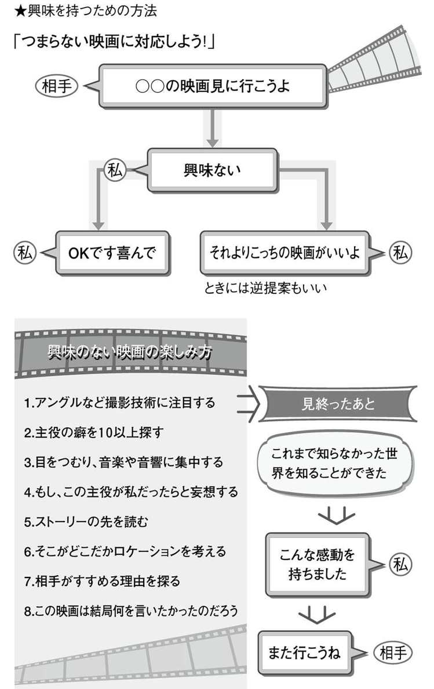
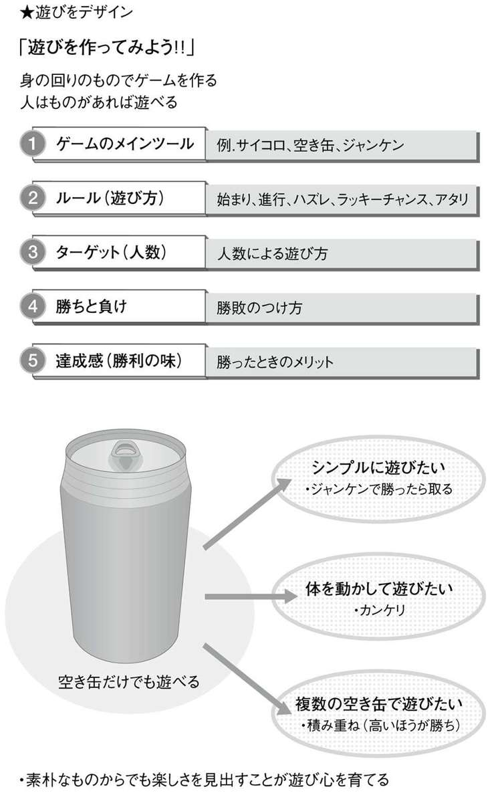
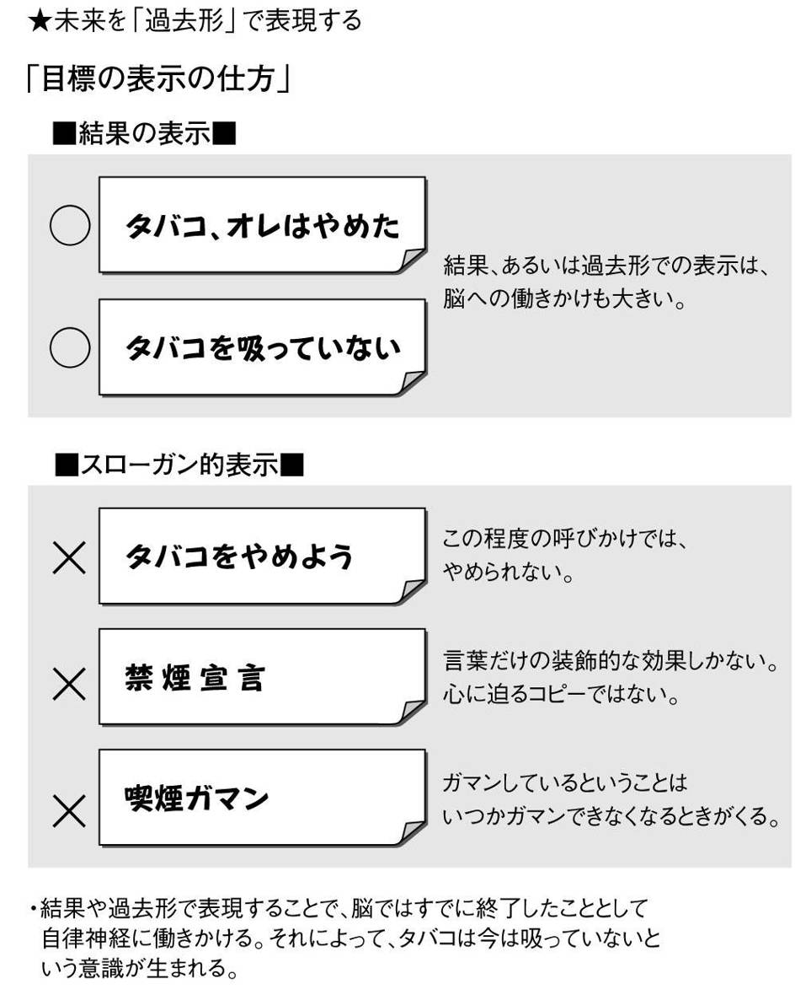
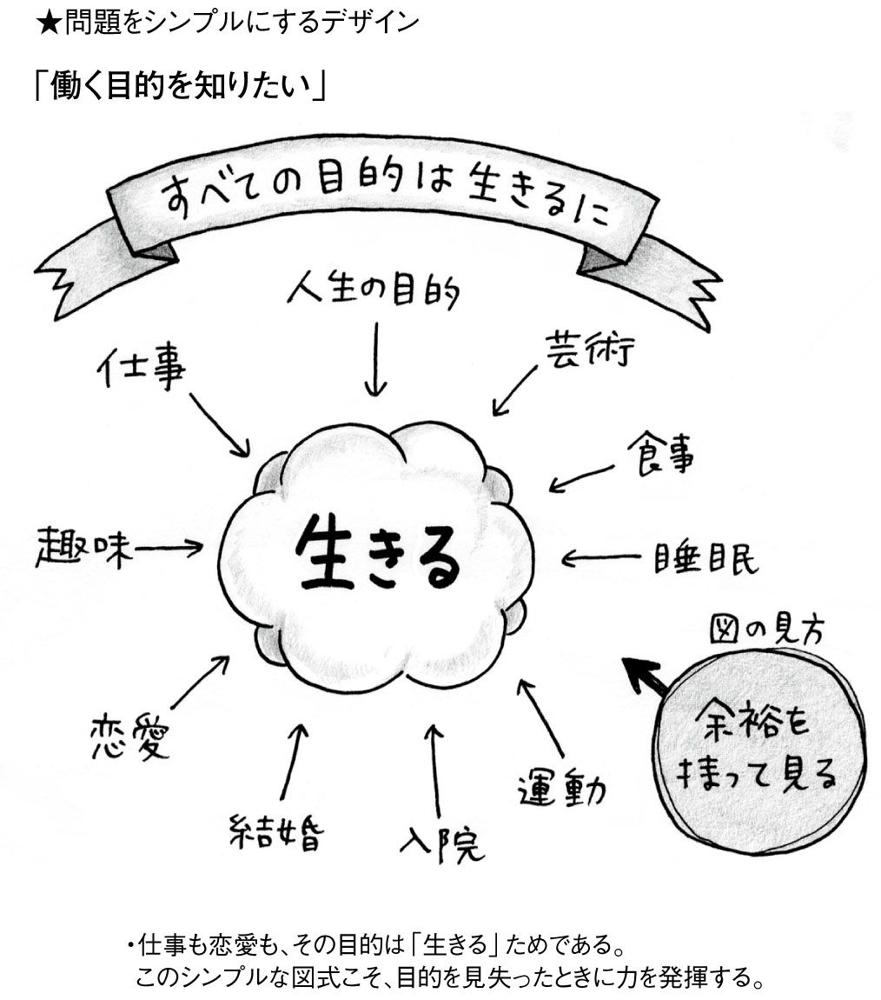
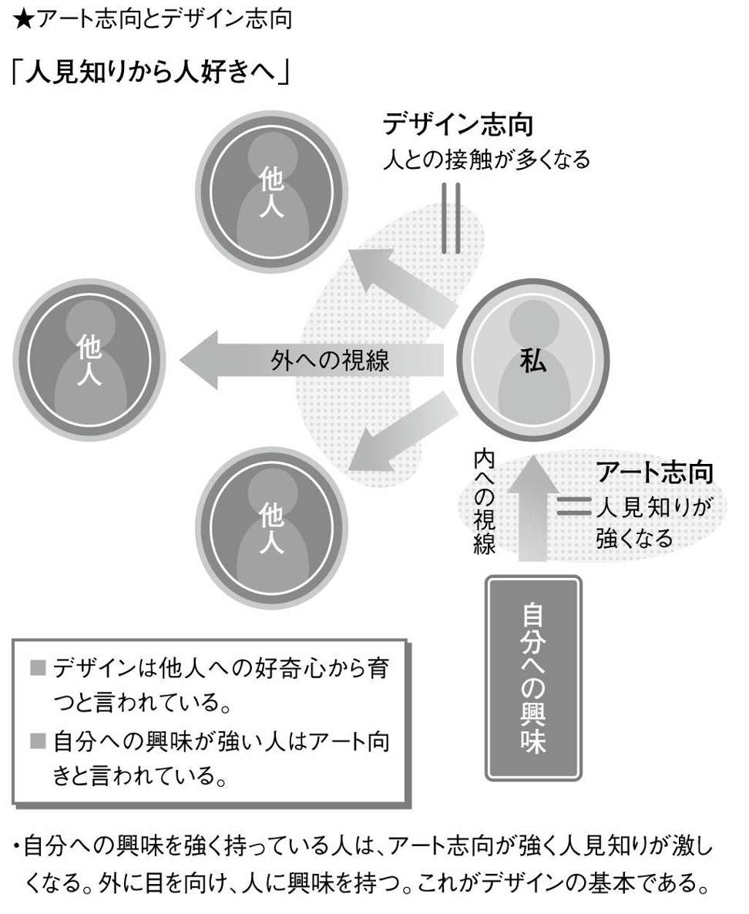
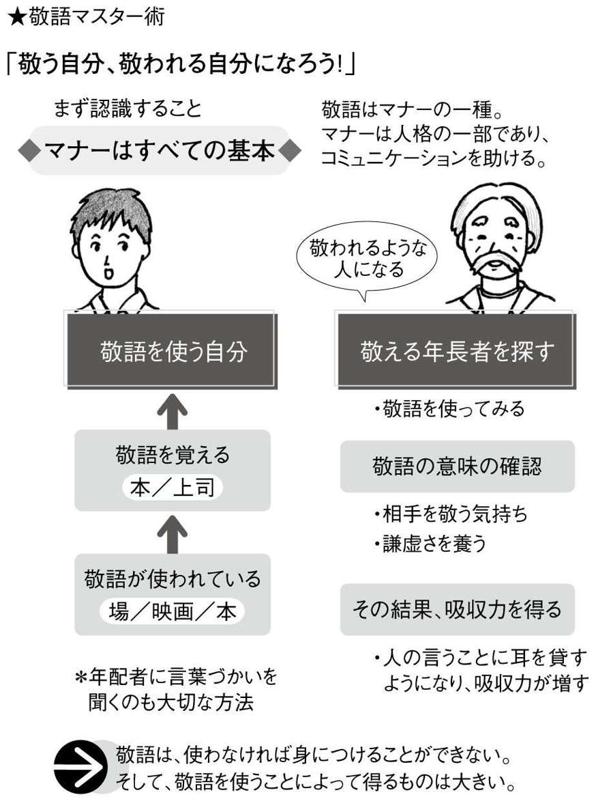
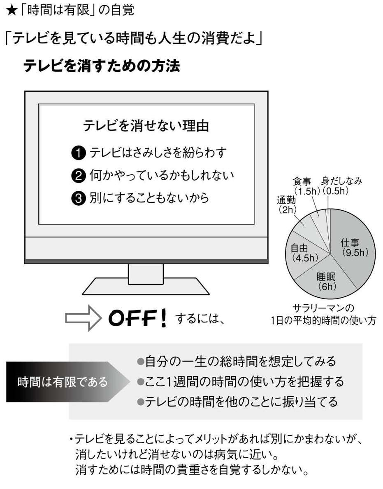
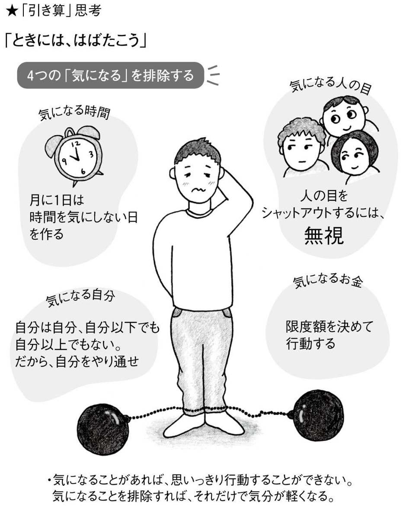

| １００の悩みに１００のデザイン～自分を変える「解決法」～ | |
| 南雲 治嘉 | |
| (2006) | |
はじめに あなたの人生に足りないものは「デザイン」
その決心が三日坊主になる理由
ズボラで、いつもうじうじ悩んでいる今の自分とキッパリおさらば。今日からは新しい自分になって、生活も仕事も人間関係もうまくやっていくぞ！
そんなふうに、誰でも年に数回は決心します。でも、三日もするとその決意は鈍り始め、できない理由を探すようになり、いつの間にか決心する前の自分に後戻り。
（ああ、また三日坊主に終わってしまった......）
あまりの意志の弱さに自己嫌悪を覚え、暗い気持ちになります。
いつもいつも、そんなことのくり返し。もう解決の道はないかのようにも思えます。
すぐにくじける弱い心を直すのは、そんなにもむずかしいことなのでしょうか？
いえ、そんなことはありません。
せっかくの決心が続かないのは、あなたの意志が弱いからではなく、あなたの人生にデザインがないからなのです。
デザインさえあれば、ズボラ人間からキッパリ人間に変身することができます。
デザインは誤解されている
この本は、デザインの本です。
でも、デザインと聞くと、ほとんどの人は、洗練されたデザインの車やデザイナーが作ったキレイな洋服なんかをイメージしますよね。
たしかにそれらもデザインなのですが、私が言いたいのは、そういった物理的、ビジュアル的なデザインのことではありません。
そうではなく、この本では、デザインの本質的な考え方を紹介したいのです。
では、デザインの本質とはいったい何でしょうか？ まわりくどい話が嫌いなので、ズバリ言いましょう。
デザインの本質は、「問題を解決すること」です。
辞書には、「デザインとは、ある目的に向けて計画を立て、問題解決のために思考・概念の組立を行い、それを可視的、触覚的媒体によって表現すること」（ダビッド社『デザイン辞典』）とあります。
また、英和辞典でデザインを引いてみると、いちばん初めに「計画」とあります。
そうです、デザイナーは問題を解決するための計画を立てる人のことなのです。
私はふだんデザイナーとして仕事をしていますが、あまりにデザイナーの役割が誤解されているので、いつも不満に感じていました。
かっこいいものを作っている人たち――これが、デザイナーの一般的なイメージです。
しかし、それは大きな間違いです。
デザイナーはいわば料理人です。企業が直面しているいろいろな問題に対して、原因を探り、素材を集め、求めている料理のレシピ（解決法）を与えるのがデザイナーの仕事なのです。
それは、どこか医者の処方箋にも似ています。
結果として、そのレシピをもとにした料理は、かっこいいビジュアルの商品になったりしますが、何もそういった「もの」だけがデザイナーが出す答えではありません。
ときには、デザイナーは目に見えないシステムを作ったり、新しい考え方や発想法を提案したりもします。
つまり、その問題さえ解決できれば、どんなものでもデザインなのです。
逆に、問題が解決できなければ、どんなにビジュアル的に優れていても、それはデザインとは呼べません。
デザインで悩み解決
デザイナーとして仕事をしてもうすぐ四〇年が経ちます。その間に私が身につけたデザインのノウハウは数知れません。
いまでは、企業の問題だけでなく、日々の生活で直面する問題、すなわち「悩み」にも、デザインの考え方をすぐに応用できるようになりました。
ですので、私には悩みが一つもありません。どんな悩みでも、デザインを切り口に、すぐに解決してしまうからです。
ややこしい問題を解きほぐし、ササッと解答を出す。うじうじしない、完璧なキッパリ人間です。
だから、何らかの問題を抱えて悩んでいる人を見かけると、
「そんな悩みは、デザインで解決できるよ！」
と言って、アドバイスしてしまいます。
デザインの考え方はあまり一般的には知られていませんが、本当にすばらしいものです。そして、いろいろなことに応用できます。
もっと、デザイナー以外の人にもこの考えを知ってもらい、悩みのない人生を送ってもらいたい――これこそ、私がこの本を書いたいちばんの目的です。
たとえば、カラー口絵の最初のページを見てください。
もし、あなたが今この瞬間、「ダルくてつらい」と感じているのであれば、そこに載っている葉っぱのイラストをじーっと一〇秒間、見つめてください。
どうでしょう？ 少し疲れが取れた感じがしませんか？
これがデザインの力です。
色にはあなたが思っている以上に意味があるのです（緑色は脳下垂体を刺激し、ストレスを解消する。赤は循環器系を刺激し、血流を促進する。黄色は自律神経を刺激し、笑いを生む）。でも、デザイナーなどの専門家でなければ、そんなことは知るはずもありませんよね。
「はじめに」なので、あえて簡単な例を挙げましたが、このように、デザインの考え方を切り口にさえすれば、あなたの悩みはちゃんと解決できます。
意志の力だけで悩みを解決できないなら、デザインに頼ればいいのです。
今日からあなたもデザイナー
この本では、日常生活の中で誰もが一度は抱いたことのある身近な悩みを１００取り上げました。そのすべての悩みに、私はデザインを使って答えを出しています。
私と一緒に、その解決へのプロセスを見ていきましょう。
私のところには日夜、企業からありとあらゆる問題が持ち込まれてきますが、企業の問題だろうと人生の問題だろうと、解決法を出すという意味では区別がありません。
デザインの対象は「何でもあり」なのです（ただし、デザインでも解決できない問題があります。それは病気です）。
だったら、身近なところから考え始めるのが、いちばんの近道だと思います。
デザインの教科書のように、いきなり理論や実例から入っても、あまり興味がわかないし、ピンときませんよね。
もともと、古代より、デザインは専門家ではなくふつうの人々が生活の中で行ってきたものでした。デザイナーという職業は、最近生まれたものです。
この本のもう一つの目的は、専門化してしまったデザインを再び私たち生活人の手に戻すことです。
あなたには、生まれつきデザイナーの素質があるのです。
この本の使い方
買う、使う、学ぶ、つながる......生活の場面ごとに、１００の悩みを分類しました。それぞれ、悩み（＝問題のとらえ方）の後に、その解決法（＝企画書）が載っています。
これは、あくまでも私というデザイナーが出した一つの答えです。
その答えを参考にしながら、自分だったらどういう答えを出すのか、一つずつ考えてみてください。
すべての悩みが、デザインの考え方を身につけるための例題になっているのです。
読んでいく順番は問いません。「これは私の悩みだ！」と思うところから読んでいってください。そして、通して読めば、デザインの全体像が見えるようになるはずです。
ズボラな自分を変えるために、ぜひ頑張ってみてください。
目次
１ プレゼントが選べない 「デザイン」のアウトライン
２ 自分に似合う服がわからない 目的の設定
３ 安い買い物でおしゃれに見せたい 評価と効果測定の方法
４ ブランド物に極端に弱い ブランディングデザイン
５ どうしても衝動買いがやめられない 気をそらすツール
６ つい、店員の口車にのせられてしまう 拒否するデザイン
７ いつも同じようなものを買ってしまう 新鮮さのデザイン
８ チラシを見ていると、ぜんぶ欲しくなる チラシデザインの基本
９ 買いたいものが多すぎて、逆に何も買えない 優先順位方法
10 車が欲しいけど、ピンとくるのがない 不完全デザイン
11 未読本の山をどうにかしたい デザインサーベイ手法
12 どんな服を持っていたか忘れてしまう ビジュアル整理法
13 手帳をうまく使いこなせない 超常用手帳術
14 あまりもので料理ができない イメージビジュアル法
15 ものが捨てられない デザイン版「捨てる技術」
16 今日着る服が決まらない チェックリスト法
17 シャツとネクタイの合わせ方がわからない カラーイメージチャート
18 したい髪形と似合う髪形が違う デザインプログラミング
19 バッグの中身がきたない デメリット認識法
20 部屋の模様替えをしたい 住み方のデザイン
21 かっこいいホームページを作りたい レイアウトの基本
22 写真がヘタだ 写真の基本
23 絵の見方がわからない 心を動かす絵
24 色彩センスがない 色は言葉
25 あの人の心をとらえる服の色が知りたい 色の誘引性
26 遊び相手がつかまらない ターゲットの囲い込み
27 遊びがつまらなくなってきた マンネリ改善策
28 ダラダラできなくなってきた 余裕を生むデザイン
29 ミーハーになれない エンタテイメントの本質
30 ぜんぜん興味のない映画に誘われた 興味を持つための方法
31 もう、飲むしかない イベントデザイン
32 ギャンブルがやめられない キャンペーンプロジェクト
33 土日が暇 楽しみのデザイン
34 遊び心を忘れてしまった 遊びをデザイン
35 とにかく目立ちたい 自己プレゼンの方法
36 料理のモチベーションがわかない 動機づけのデザイン
37 いろいろなカードを作ってみたい カードはメッセージ
38 自作のカレンダーが欲しい カレンダーデザイン
39 子供のために絵本を作ってみたい 絵本のデザイン
40 お守りを作ってあげたい 愛をカタチにする
41 絵心がない 絵の練習法
42 アイディアがぜんぜん出ない 発想力
43 便秘だ 予防のためのデザイン
44 とにかくダイエットしたい 決意の持続方法
45 毎晩、コンビニですませてしまう 食のデザイン
46 タバコをやめたい 未来を「過去形」で表現する
47 どうも最近、老けてきた 元気をデザインする
48 人前に出るとあがってしまう 状況に対応するデザイン
49 集中力が続かない リピートをデザインする
50 本気で資格を取りたい 段階設定
51 社会人になったら、勉強したくなってきた 意欲と向上心のデザイン
52 あんなに勉強したのに、英語が話せない 未完を生かすデザイン
53 漢字が書けなくなってきた タイポグラフィーデザイン
54 何か新しいことを始めてみたい 結果の出るイメージ発想
55 独学ができない 段取りのデザイン
56 やりたい仕事が見つからない 可能性追求デザイン
57 給料が安すぎる 納得を生むデザイン
58 彼氏が働かない コミックの活用
59 仕事が忙しすぎる 自己評価と時間創出法
60 何をしてもミスが多い ミス防止プログラム
61 部下が言うこと聞かない コミュニケーションの最適化
62 上司のアタマが固い 上下関係のデザイン
63 とりあえず転職したい 原因の解明
64 何のために働いているのだろうか？ 問題をシンプルにするデザイン
65 公園デビューしたい オープニングセレモニー
66 ボランティアに興味がある 準備の重視
67 飲み会で人見知りする アート志向とデザイン志向
68 幹事が苦手 進行を管理する
69 何とかして、グループから抜けたい 説得の技術
70 五分に一度はケータイを確認してしまう 想像力を取り戻す
71 他人と比較してしまう オリジナリティ
72 友達が少ない 距離感のデザイン
73 会話が続かない 会話力はイメージ力
74 メールの真意がつかめない 心理の読み方
75 人との距離感がわからない 抽象的概念の視覚化
76 八方美人だと言われる 短所を長所に変える方法
77 敬語がうまく使えない 敬語マスター術
78 人の好き嫌いがはげしい アイデンティティの再構成
79 異性とうまく話せない 相手を知るための戦略
80 恋人ができない 奇跡のおこしかた
81 デートコースが決められない 驚きを演出する
82 遠距離恋愛になってしまった ものごとの質を変える方法
83 結婚したいけど、できない 囲い込みから固定化へ
84 家族とのつき合い方がわからない 参加型コミュニケーション
85 自分のイヤなところが目につく 夢をかなえるための三つのルール
86 朝、起きられない 原因と結果の法則
87 地下鉄で迷う 全体像の把握
88 日記が続かない 責任感のデザイン
89 テレビが消せない 「時間は有限」の自覚
90 雨の日を楽しみたい 楽しみ探求法
91 節約しているのにぜんぜん貯まらない 数字で考える方法
92 借りたお金が返せない 自己暗示法
93 はじけたいのにはじけられない 「引き算」思考
94 うじうじ悩まず、サクッと決めたい 概念図の活用
95 うまく時間を使いたい 残業しない仕事術
96 人真似しかできない 複合発想法
97 毎日がつまらない 努力の効用
98 やりたいことが多すぎる 時間軸による計画法
99 夢がない 夢をカタチにするためのデザイン
口絵・図版デザイン 斉藤理奈子、五味綾子
「デザイン」のアウトライン
誕生日、クリスマス、お祝い事......。プレゼント選びはそう簡単ではありません。
実は、プレゼント選びの手順は、「デザイン」の基本的なプロセスとほとんど同じものなのです。なので、プレゼント選びの方法がわかれば、デザインの方法もわかります。
デザインでは、何よりもまず目的を設定します。目的のないデザインはデザインではありません。プレゼント選びの場合、その目的は「相手を喜ばせる」ことになります。
次に、コンセプトを決め、ターゲットを絞ります。コンセプトは、「届け私の気持ち！」というように、できるだけ具体的なものにします。ターゲットは、ここでは贈る相手です。
ターゲットをリサーチ（事前調査）するのもいいでしょう。テーマは「プレゼントは何がいいか？」ということで、数人で集まってブレーンストーミングを行い、候補を出し合います。
そして、決定条件を確認し、候補を絞り、四つのポイントから候補を評価します。
ここまでしてはじめて、プレゼントの決定、購入になるのです。
そして、最後に忘れてはならないのが効果測定。喜んでくれたかどうか、ちゃんと確認します。これは、デザインが目的を達成したかどうかの判定であり、次への反省にもなります。
目的の設定
自分に似合う服を探すのは思った以上に大変なことです。買い物に行っても、十分に納得して服を買うことはめったにありません。だいたいは、「まぁ、似合うだろう」くらいに思って買うことが多いのです。なぜ、こんなにも似合う服を探すのは難しいのでしょうか？
その原因は、自分に似合うかどうかは自分の好き嫌いとは関係ない、というところにあります。好き嫌いで服を選んでいるうちは、永遠に自分に似合う服は選べないのです。
デザインでは、デザインの対象を客観的に把握します。この場合の対象は「自分」です。自分に似合うというのは、好みの問題ではなく、「自分を相手にどのように見せるか？」というプレゼンテーションの問題なのです。
「自分に似合う服を選ぶ」には、服はプレゼンテーションのための重要なツールだと考えることが大事です。その服を着ようとしている場所、時間、雰囲気、イベントの内容といった条件を整理して、どういう相手にどういう自分を伝えようとしているのか、「目的」をはっきりと明確にすれば、おのずと選ぶべき服の形、素材、色が決まります。
似合う服とは、ある目的を達成するために、いちばん効果を発揮する服のことなのです。
評価と効果測定の方法
キレイな女優さんが、「これはノーブランドです」と言って安い服をおしゃれに着こなしているのを見ると、「もとがいいから......」と羨ましくなります。
ところが、こうした着こなしはあなたにもできることなのです。
大切なのは、うまくコーディネートすること。コーディネートとは、組み合わせて調和を得るという意味です。
組み合わせるものはたったの三つ。形と素材と色です。これがコーディネートのすべてだと言えるでしょう。ここでは、「同質のものは調和しやすい」ということだけ覚えてください。たとえば、綿と綿、青と青は互いに調和します。
そして、おしゃれ度をアップさせるのが効果測定です。自分の考えた着こなしで外出し、うまく調和が得られているかどうか、何人かに客観的に評価してもらうのです。
ノーブランド同士のコーディネートでも、調和さえ得られていればおしゃれに見えます。逆に、ブランド物でかためても、調和が得られていなければダサく見えます。
効果測定の結果を受けとめ、次に生かせば、確実におしゃれ度はアップするでしょう。
ブランディングデザイン
日本人はブランドに弱い、とよく言われます。たしかに、街であたりを見渡せば、高級ブランドに身をかためた人をすぐに見つけることができます。ですので、ブランドに弱いのは、何もあなただけではありません。これは、日本の文化とも言えます。
ブランドに頼ることは、必ずしも悪いことではありません。しかし、そのブランドのものならなんでもＯＫというのは、ただのコレクターにすぎません。製品の機能を知り、それを生かしてはじめて価値が出てきます。
ブランドに頼るのは、自分の中に美的な価値に対する明確な基準がないことを意味します。自分の選択眼がしっかりしていれば、ブランドに関係なく、いいものを選ぶことができます。そのためには、どうすればよいのでしょうか？
まず、それぞれのブランドの強みや特徴、つまり「価値」をちゃんと把握することから始めましょう。そうすれば、ＡのブランドにあってＢのブランドにはないものが見えてきます。そのうえで、自分らしさを表現するために、どのような価値を身につければいいのか考え、ブランドの名前にとらわれず、自由な発想でブランドを選択していけばよいのです。
気をそらすツール
衝動買いの心理は実に巧妙です。理性も、その心理の前では何の力にもなりません。そして、衝動買いの難しいところは、買うときは本当に必要だと思っていることです。購入してはじめて不必要だと気づき、衝動買いしてしまったことを後悔するのです。
購買動機の約五〇パーセントは衝動買いだとも言われています。だから、自分だけの力で衝動買いに打ち勝つのは至難のわざだと言えます。
それでもデザインは、何とかそれをくいとめようとする人をサポートします。この場合、「目的をそらす」と「冷静にさせる」という二つの方法が考えられます。
目的をそらすとは、もっと必要なものを買うために支出をひかえさせることです。たとえば、自動車を買うためにいま目の前にあるものを諦めるということです。冷静にさせるというのは、「これは本当に必要なのか？」と理性を呼び戻すことです。
この二つを合わせて、目に見えるツールを作ります。それはいつも必要なわけではないので、衝動買いしそうなときに目に入ればいい、という形のデザインになります。
このツールによって、「自分が衝動買いしそうになっている」ことを認識できるのです。
拒否するデザイン
一時、「カリスマ店員」と呼ばれる販売員がもてはやされました。常連客は、その人の言うことならほとんど信じきって、商品を買ってしまいます。まさに、「口車」にのってしまうのです。
他にも、テレビショッピングや実演販売などは、催眠的話術で人の購買意欲をうまく刺激して、購入のためのモチベーションを生み出します。テレビＣＭなどの広告も、ある意味「口車」で、私たちに商品を買わせようとします。
といっても、必要なものならまだしも、余分なものまで無理に買うことはありません。口車にのりやすい人というのは、自分自身の信念がしっかりしていないと言えます。確固たる信念があれば、人の勧めも断ることができます。
デザインを生かした解決方法は、購買動機の一八〇度逆を考える、というものです。たとえば、「とにかく素敵だ」と思ったなら、「よく見ると普通だ」と意識的に考えるようにします。天の邪鬼になっていいので、無理にでも拒否理由を探すのです。
それでも「買いたい！」と思うのなら、それは本当にあなたに必要なものなのです。
新鮮さのデザイン
本屋で読みたい本を買って帰ったら、なんと、本棚にいま買ってきた本が......。
そこまではいかないまでも、すでに持っているのと同じようなデザインの服を買ってしまったりするのは、誰にでもよくあることです。それは、自分の持っている興味や意識が、いつも同じようなものに同調してしまうからだと言えます。
物ではなく人でも同じです。生涯で好きになる人には共通点が多く見られます。たとえば、自分を捨てた人と同じようなタイプの人をまた好きになってしまうことはよくあります。
買い物でそれがくり返される場合、無駄になるので、どうしても避けなければなりません。同じようなものを買わないためには、どうすればいいのでしょうか？
答えはカンタンです。
くり返し同じものを買う人をリピーターと呼びますが、リピーター作りの逆をすればいいのです。同じようなものを見ても新鮮に感じなければ、手を出すことは少なくなります。見慣れてしまうのです。
つまり、買ったものをしばらく露出させたり、触れたりする機会を設ければいいのです。
チラシデザインの基本
新聞の折り込みチラシの量は年間一万枚以上。まさに膨大な量です。
チラシは景気のバロメーターと言われていて、景気回復の動向を伝えてくれます。チラシは、数ある広告の中でも、直接的にメッセージが送れるメディアということで、影響力が強いのが特徴です。
みなさんはあまり意識しないかもしれませんが、実は、チラシには、ありとあらゆるデザイン理論が応用されています。人の目を引き、興味を持たせ、共感を得させて、購買に結びつけるための方法が凝縮されているのです。
なので、チラシを手にした人が「欲しい！」と思うのは当然のことです。けっして、間違いではありません。チラシを見て食指を動かさない人のほうがめずらしいのです。
ただ、「ぜんぶ欲しい」と思ってしまっては、情報に踊らされるだけで、本当に必要なものを買うことができません。大切なのは、チラシから必要な情報だけを得ることです。
そのためには、チラシの読み方をマスターする必要があります。チラシを賢く利用すれば、逆に節約にもつながります。
優先順位法
現代人は物欲のかたまりだと言われています。あれも欲しい、これも欲しい！ ウィンドウショッピングをしながら、カタログを見ながら、いつも目をキョロキョロさせています。
ところが、その欲が限度を超えると、どれを選んでいいのかわからない！ というパニックに陥ります。バーゲンセールに行ったのに、欲しいものがありすぎて結局ほとんど何も買えずに店を出てしまった、といった経験がみなさんにもあるのではないでしょうか。
買いたいものが多すぎて逆に何も買えない、というおかしな現象には原因があります。優先順位のつけ方を知らないのです。デザインで用いる優先順位法を見てみましょう。
はじめに、買いたいものを衣類、家電製品、雑貨といった大きなグループに分け、どのグループが今もっとも必要か検討し、順序をつけます。次に、そのグループ内のアイテムにもまた順位をつけていきます。
すべての順位づけが終わったら、最終決定を行います。もちろん、一位グループの１番が最優先されるのですが、次にくるのは、一位グループの２番でも二位グループの１番でもかまいません。そこは自分で考えて、優先順位を決めていきます。
不完全デザイン
高価なものを買うとき、人は慎重になります。最近では、デジタルカメラやパソコンや車など、高額商品の機能やクオリティはどのメーカーのものでも大して変わらなくなりました。だから、そういう意味では、どれを買っても同じと言えるかもしれません。
では、消費者は何を見ているかといえば、デザインの良し悪しです。自分の好みのデザインに価値を見出しているのです。
たとえば、車には、スタイルとサイズというデザインの重要な要素があります。また、色も決定的な選択の基準になります。
しかし、スタイルもサイズも色も、けっして無限に用意されているわけではありません。最近では、カスタムメイドっぽく、いろいろな色や仕様を組み合わせることも可能ですが、これも無限ではないので、本当に自分の求めているものとは微妙なズレが生じてしまいます。
安いものであれば、微妙に好みと違っていても受け入れることができるのですが、高価なものだけに、なかなか納得することはできず、購入に慎重になります。
ここで必要なのは、「価値ある妥協」です。デザインに完全はないのです。
デザインサーベイ手法
いずれ読もう、と思って買った本の六割はツンドクになるというデータがあります。本屋で見かけて面白そうだと思って購入しても、なかなかゆっくりと本を読む時間が取れず、未読本の山ができている人も多いことでしょう。
せっかく何かを感じて買ったのですから、眠らせずに、活用する方法を考えましょう。
デザインには、デザインサーベイという調査手法があります。ツンドクされている本は、その存在さえ忘れられていることが多いので、ここでは、環境調査と埋もれた本の発掘調査がメインになります。
どれくらいの本が未読なのか？ 未読本はどのような状態で埋まっていたのか？ その本の購入動機は？ なぜ買ってすぐに読まなかったのか？ これらのデータを一冊ごとに記録していきます。そして、少し面倒ですが、サーベイの結果を報告書にまとめます。
すると、これまで漠然とツンドクになっていた未読本には、「ベストセラーは買うだけで満足していた」など、何かしらの傾向があることがわかってきます。傾向がわかれば、読破計画などの対策も立てられるようになります。
ビジュアル整理法
タンスを整理していたら、数年前に買った洋服と久しぶりのご対面。「そうだった、こんな服も持っていたんだ！」と、自分の物忘れにビックリすることがあります。
この「しまい忘れ」をなくすために、自分の持っている服の情報を視覚化して整理します。タンスの奥に入りすぎて目にする機会が失われたのが、いちばんの原因だからです。
まずは、視覚化するために洋服の写真を撮ります。
インスタントカメラなら、すぐにカードとして分類できるので便利ですが、写真一枚あたり値段が高いのがたまにきず。デジタルカメラで撮って、パソコン上でアルバム式に整理するのがいちばんでしょう。
その際、写真を、春夏秋冬、四季ごとに分類しておくと便利です。さらに、服と合わせる別のアイテム（靴やバッグなど）も写真にしておくと、コーディネートに抜群の威力を発揮します。
また、デジカメ画像を一枚一枚プリントアウトしてカードにすれば、タンスの引き出しなどに直接貼って、中身をビジュアル的に把握することもできます。
超常用手帳術
ひとくちに手帳と言ってもその種類は多く、小型から大型、日付入りからメモ用までさまざまです。最近では、「夢をかなえる手帳」といったものまで出ています。
手帳をうまく使いこなせないのは、手帳に期待する機能と、持っている手帳の機能にズレがあるからです。また、機能が多すぎて、どれもが中途半端になっている人もよく見かけます。
自分が手帳をどう使いこなしたいのか？ まずは、その目的を明確にします。
手帳には大きく三つの機能、スケジュール確認、情報整理、記録があるので、これらの機能のうちどれを重視するのかによって、手帳の選び方も組み立て方も変わってきます。手帳にすべてを求めるのではなく、どれか一つの機能に絞るといいでしょう。
さらに、既製品をそのまま利用するのではなく、自分がいちばん使いやすいように創意工夫する必要もあります。そうすることで、手帳の機能を一〇〇パーセント活用できるようになるのです。
自作のページを作る際には、見やすさ（整理されてキレイ）と書きやすさ（書きたくなるスペース）にも注意してみてください。
イメージビジュアル法
あまりもので料理をうまく作るには、才能やセンスが必要だと思っている人は多い。しかし、料理は、才能やセンスではなくデザインの問題です。もっとも大切なのはイメージする力です。こういう料理を作ろうというイメージから、すべてが始まるのです。
イメージははじめが肝心です。まず、あまりものは何なのか、素材の確認を行います。これをしっかり頭に叩き込んで、次に料理のジャンルを一つ決めます。
ジャンルを決めたら、作りたい料理のイメージをより具体的にします。漠然と「イタリアン！」ではなく、はっきりとしたビジュアルを思い浮かべるのです。そして、そのイメージをスケッチするか、本の中から写真を探してきます。
慣れてくるとこの手順は不必要になりますが、作りたいものを確実にイメージするにはスケッチ（視覚化）が適しています。スケッチは、あいまいな部分をそのままにしておくことを許さないからです。
イメージが完成したら、それを実現するために料理法を二つ選びます。料理法は、少ない組み合わせのほうがスピーディーに失敗なくできるからです。
デザイン版「捨てる技術」
ものが捨てられない＝雑乱とした環境は、日本のように狭い生活環境にあっては百害あって一利なしです。動きにくいだけではなく、いざというときに必要なものが見つからないということにもなりかねません。
ただ、頭ではわかっていても、なかなかものが捨てられるようにはなりません。話はそんなに単純ではないからです。
捨てられない人の潜在意識には、ものに対する執着心があります。言い換えれば、ものを持つことで過去とのつながりを確認したいのです。そういう人は、「いつか使うかも......」などと言い訳して、昔の思い出と決別するのを嫌います。
本当にものを捨てて新しい環境を作りたいと思うなら、本気で「整理のプログラム」を実施しなければなりません。デザインはそのための手助けをします。
このプログラムでいちばん重要な過程は２です。捨てる決断をするために、「二年以上使用しなかったものはなかったものと判断する」のです。過去との決別は、それくらいの発想と気迫でのぞまなければ成し遂げられないものなのです。
チェックリスト法
「ああ、どの服を着ていこう、もう時間がないわ！」
毎朝くり広げられるお決まりの光景かもしれません。学生のように、毎日同じ制服を着るわけではないので、洋服選びには日々気を遣います。
しかし、デザインの考え方を用いれば、洋服選びはずっと楽になります。
デザインには、それを構成する要素（エレメント）が数多くありますが、洋服選びとは、ある意味、そのエレメント選びなのです。
エレメントを選択する場合、あらかじめ用意したオズボーン式チェックリストを使うと、時間がかからず、的確にエレメントを決めることができます。
このチェックリストの特徴は、一つの項目に対して、相反する二つの選択肢が用意されていることです。
自分が描くイメージがそのどちらなのかを選び、一方を消去します。そして、残っているエレメントを合わせると、自分が求めているイメージができあがっているのです。
あとは、自分の持っている服の中から、そのイメージに合うものを選べばいいのです。
カラーイメージチャート
男性は、女性に比べるとコーディネート（組み合わせ）に苦手意識を持っています。特に、シャツとネクタイの合わせ方がまるでわからないという人は多いのではないでしょうか。
シャツとネクタイというアイテムは最小限の二種類ですので、実はまったくごまかしがききません。しかし、恐れることはありません。シャツとネクタイの組み合わせが難しいのは、配色の問題である場合がほとんどなのです。
つまり、配色の基本さえおさえておけば、コーディネートは誰でも簡単にできるのです。
もちろん、その上着である背広の色も考慮しなければなりませんが、最も重要なのは、シャツとネクタイの色の組み合わせで、特定のイメージをメッセージしていることです。
ということは、自分がどのようなイメージを人にメッセージしたいかに尽きます。
もし、都会人らしさを伝えたいなら「洗練された」というイメージ言語を選択し、そこにある色で配色します（一六〇のイメージ言語を掲載した拙著『カラーイメージチャート』参照）。
シャツとネクタイは、メッセージのためのアイテムなのです。

デザインプログラミング
顔、あるいは頭部というものは、複数のデザインエレメントで構成されています。骨格、目鼻立ち、生え際のライン、髪質、ボリューム、色、肌の質感など、多くの要素が顔のデザインを作り上げています。そして、これらの組み合わせはほとんど無限に存在します。
つまり、簡単に言えば、あなたの顔のデザインは世界に一つしかないのです。だから、雑誌などに載っている髪型が自分に似合わないのは、当然と言えば当然のことなのです。
自分がしたい髪型は、その髪型だけを見ている場合が多いと言えます。全体を見ずにその髪型だけを見たとき、たしかにいい髪型でも、人の個性的な顔と組み合わせると、違和感を覚えることがあります。
つまり、あなたの顔にはあなただけの髪型（エレメント）が必要なのです。たとえば、三角形の顔型には、それに調和する髪型と髪のボリュームというのがあります。
人それぞれに調和するものは違うということ、これはしっかり認識しておきたいところです。そうでないと、したい髪型にこだわるばかりに、逆に顔が目立たなくなるという主客転倒に陥ります。似合う髪型こそが、追求すべき髪型なのです。
デメリット認識法
見た目も服装もこぎれいな人に限って、バッグの中身がきたなかったりします。これはもちろん、バッグに必要以上にものを詰め込んでしまったり、雑に放り込んでしまったりしているからですが、いちばんの原因は、その持ち主がバッグの中身まで見られることはないと思っていることです。
財布の中身もそうですが、案外、そういった細部にその人の地の部分が出ます。
まずは、バッグが持つ機能を十分に認識することから始めましょう。ここでは特に、そのデメリットに注目します。
入れすぎや雑な入れ方によるデメリットは、「形が崩れる」「すぐに中のものが探せない」「入れたもの同士がぶつかり合って破損する」などありますが、いちばんのデメリットは「人からだらしないと思われる」ことです。単にきたなくてイヤだなと思うのではなく、しっかりと個々のデメリットを認識することが、それを避けようとする意識と行動につながるのです。
このデメリット認識法は、現在、タバコのパッケージに応用されています。吸いすぎると健康を害する可能性があることを表示しています。
住み方のデザイン
自分の部屋は、明日への英気を養い、精神のバランスを安定させる場所です。しかし、部屋の機能や効能は、知っているようで、実はきちんと理解している人は少ないのも事実。部屋に関するレクチャーを受ける機会は、専門家になる人以外、ほとんどありません。
部屋のデザインで忘れてならないのは、その部屋の主人公は家具やインテリアではなく、そこの住人だということです。
つまり、住人であるあなたがどのようにその部屋で過ごすか、ということが基本になります。そこはあなたが支配する空間であり、もっとも自分らしさが出せる空間なのです。
もし模様替えをするなら、これからの季節、その部屋であなたは何をしたいか考えます。模様替えは単なる気分転換ではありません。ちゃんと目的がある行為なのです。
ポイントは、安らぐための「くつろぎ」と少しでも体を動かす「運動（ストレッチ）」のスペースを確保することです。また、部屋の利用の仕方は、曜日によって変化します。それを動線（人の動きを線で表現したもの）によって確認します。家具などをどこに置くかは、その動線によって決めていくのです。
レイアウトの基本
ＩＴ（情報技術）は、現代人の新しいステータスとして定着しました。車やファッションなどと同じく、その活用度合いで、その人のポジションや流行の取り入れ方がわかります。
ＩＴといって誰もがまっさきに思い浮かべるのは、ホームページ（ブログも含む）でしょう。今や、ホームページはその人そのものと言っても過言ではありません。
そこで、見栄も働いて、どうせならかっこいいものを作りたいという欲求が出てきます。ただし、「かっこいい」という意味は、単に表面的なキレイさだけを指すのではありません。
ページ全体のまとめ方から、中身のわかりやすさ、読みやすさ、面白さ、配色の美しさ、ページの容量（重さ）まで、そのホームページを見る人への配慮すべてを指して「かっこいい」と言っているのです。
見づらく、使いにくいページは、どんなにビジュアル的にキレイでもダサいページです。
これは主にレイアウトの問題です。人の目をとらえ、視線を誘導（視覚誘導）し、中身にまで引き込んでいくのは、まさにレイアウトの役割です。メッセージとしての中身とともに、人に強い印象と心地よさを与えられるレイアウトを目指します。
写真の基本
デジタルカメラの登場で、誰でも簡単に写真が撮れるようになりました。今や携帯電話にもカメラがついているので、その敷居はさらに低くなったように思えます。
性能も驚くほどよくなりました。手振れや露出、ピントのズレを気にしなくても、そこそこさまになる写真を撮ることができます。また、デジカメなら、その場でどのように撮れたのか確認できるので撮り直しも自由ですし、デジタル処理で加工も幅広くできます。
だから、写真が苦手という人はグッと減ったように思えます。それなのに、「写真がヘタだ」と悩んでいる人は、きっと構図の取り方がわからないのでしょう。それは、写真の基本中の基本であり、絵と同じ審美性（美しさ＝美的効果）の問題だと言えます。
「写真がうまい」と言われるようになるためには、構図の取り方を工夫すればいいのです。特に、空間（ホワイトスペース）の取り方を覚えると、写真のレベルが一気に上がります。
まずは、ホワイトスペースを意識しながら、フレーム全体を瞬時に見渡す癖をつけましょう。そうすれば、同じ対象を撮るにも、構図によって写真の表情がガラリと変わることがわかってきます。
心を動かす絵
本当に楽しむために絵を見るのであれば、現代絵画と言われている作品や美術評論家たちをシャットアウトすることをおすすめします。なぜなら、絵が投機の対象として扱われることが多いからです。そこに本当の美があるかどうかは、別問題だと言えます。
自分の目で絵を選べるようになるために、まずはそういった考え方から距離を置く必要があります。有名、無名を問わず、あなたの心に働きかけてくる絵が「いい絵」なのです。
絵とはいったい何なのでしょうか？ 絵がどうして生まれたのか考えれば、本質的な絵の機能を知ることができるでしょう。古代、人類は神とコミュニケーションを図るために、洞窟に絵を描き始めました。けっして、生活空間を飾るために絵が描かれたのではないのです。あくまでも、絵は意思疎通のためのツールでした。
この機能は、人間の本能に近いと思います。絵がうまいとかヘタとか言う前に、人は誰でも何かを伝えたいがために絵を描きます。子供の絵が表現技術が拙いのに心に響くのは、そこに込められたメッセージが強いからです。
絵の見方の基準は、あなたがそのメッセージを必要としているかどうかに尽きるのです。
色は言葉
色はすべてのものについています。そして、私たちはいつも色に囲まれながら生活し、その美しさに感動したり、癒されたりしています。しかし、不思議なことに、いざ自分が色を選んだり、使うとなると、とたんにどうしていいのかわからなくなります。
不安の原因は、ふつうの人は色彩の原理など考えたこともないからです。
色は単独で使われることがほとんどありません。必ず、複数の色と組み合わせて使われます。そういった意味では、色は言語と一緒です。組み合わせることで、漠然としたイメージを伝えようとします。色は言葉だと言ってもいいでしょう。使い方（文法）があり、それに基づけば、見る人は意味を受け取ります。
私たちはふだん、周囲の色からたくさんのメッセージを受け取っているのです。
不思議なのは、文法を知らなくても、きちんと意味を受け取っていることです。これは会話も一緒です。相手の話を聞くときに文法を意識するようなことはありませんよね。
だから、デザイナーにならないのであれば、色彩の文法など詳しく知らなくてもいいのです。本などを参考にしながら自由に、思ったように配色すればいいのです。
色の誘引性
色の力で人の心をとらえることは可能です。かつては、人の心に及ぼす影響を色彩心理と言っていました。たとえば、赤は情熱を感じさせるとか、青はクールな感じを与えるといったものです。しかし、これは人に聞いた感想をもとにまとめられたものであり、あくまでも統計による推測が中心です。赤を見て寒さを感じる人も当然いるのです。
現代では、色と脳、脳と生理の研究が行われており、色彩心理の時代から色彩生理の時代へと移ってきました。ここで注意したいのは、人の心をとらえるための、ある特定の色があるわけではないということです。もし、そんな色があるとすれば、それを着て歩いただけで、多くの人がうしろについてきてしまいます。
要は、その相手にだけ通じればいいわけです。ということは、相手が何色に反応するかなのです。もちろん、それを知るためには相手を色彩分析にかけなければなりませんが、そんなことは、何も知らない相手には不可能でしょう。
ただ、確定はできないかもしれませんが、いろいろな条件を見ていくことで、ある程度、反応する色を絞り込むことは可能です。
ターゲットの囲い込み
ようやく時間が取れたとき、「家にいるのがもったいない。せっかくだから人を誘って遊びに行こう！」と思うのはよくあること。ところが、そういうときに限って、なかなか相手がつかまらないものです。
どうしてかといえば、前日や当日にいきなり誘いの電話やメールを入れても、相手はすでに他のスケジュールを入れてしまっているからです。「突然言われても......」といった反応があるだけでしょう。相手の予定を覆すには、あなた自身の魅力か、話題のスポットのチケットを持っているなどといった魅力のどちらかが必要になります。
もちろん、そんな魅力をすぐに手に入れることは容易ではありません。
そこで、環境を新規に作ります。自分がもしかするとその日、時間が取れるかもしれないということを、あらかじめアピールしておくのです。また、いつかその人と遊びに行きたいということも伝えておきます。
これを、ターゲットの囲い込みと言います。事前の囲い込みを行っておけば、急に声をかけても唐突感がなく、相手もＯＫを出しやすくなります。
マンネリ改善策
新しい遊びに出合うと、かなり燃えます。病みつきになります。そして、こだわるようになり、「極めたい！」という願望が出てきます。
ところが、やがてそれほどレベルアップしなくなり、壁にぶつかります。その遊びをつまらなく感じ始めます。それが、遊びのマンネリです。
しかし、マンネリはけっして困ったことではありません。次のステップ、次のレベルに進むために必ず通らないといけない、いわば関門なのです。
マンネリを迎えたときは、さらに上を目指す、しばらく休む、他の遊びに移る、といった三つのパターンが考えられます。
さらに上を目指すのは徐々にプロ的なものになり、過酷な練習が必要となります。遊びではなくなっていきがちですが、肝心なのは、極めようとはしない心構えです。
しばらくのリタイアは、遊びとしては適したペースと言えます。しょせんは遊びなのですから、マンネリと感じたら休むことです。遊びは極めるものではなく、遊ぶものなのです。
そして、もっと楽しい人生を送りたければ、さっさと次の遊びを見つけることです。
余裕を生むデザイン
若者の特権は、自由に使える時間です。しかし、残念ながら、若者の時代にそれに気づく人はほとんどいません。「時間が自由に使える」ことを意識する機会がないからです。
皮肉なことに、自由な時間が少なくなってはじめて、そのことに気がつきます。時間の貴重さと、ありあまる暇が若者にあることを、苦労して人生を歩んだ年配者はよく知っているのです。高齢者もまた暇がたくさんあると指摘する人もいますが、暇の質が違います。高齢者の暇は体が自由に動かない暇なのです。
この差は、飲みに行ったときにはっきり出ます。若者は、コンパが終わっても飲み屋の前でなかなか次の行動を取ろうとしません。ダラダラとだべったりしています。サラリーマンは次の日があるので、サッと解散し、家路につきます。もちろん、若者でもキビキビ動く人はいますが、全体的にダラダラ過ごすほうが多いと言えます。
ダラダラと遊べなくなったのは、あなたが大人になった証拠です。それは、自分の時間の縮小を意味しています。かといって、なにも窮屈に感じることはありません。バーチャルなダラダラ時間を持つことで、心に余裕を生むことができるのです。
エンタテインメントの本質
ミーハーは一九五五年頃の流行語で、「みいちゃん、はあちゃん」からきています。当時、日本では若い女性の名前に「みよこ」と「はなこ」が多かったので、軽薄な若者風俗全体を指すものとしてこの言葉が使われました。そして、いつからかミーハーは、若者に限らず、「大衆的であること」の蔑称として用いられるようになったのです。
しかし、現在では、ミーハーの侮蔑の意味はだいぶ薄れています。なかには、ミーハーであることはエンタテインメント（娯楽、大衆性）を理解できているという意味から、自ら積極的にミーハーを名乗る人もいます。
そうはいっても、ミーハーになることに消極的な人は依然として多いでしょう。大ヒットした映画や音楽を大衆的だと言ってバカにし、自分だけの世界にこもろうとします。
ミーハーになんかなれないという人は、自分にはエンタテインメントの本質を理解しようとする柔軟さが足りないことをまず認識してください。
ミーハーにはこだわりがありません。あるものが流行ればそちらに行き、廃れれば別のものに乗り換える。変なこだわりを持たないことは、人生を幅広く生きるための方法なのです。
興味を持つための方法
人の好みはいつの間にかできあがっていきます。
音楽や映画といった趣味だけでなく、人の好みや生活習慣まで、人は自分の中にある「好き嫌い」のフィルターを通して、情報を選り分け、興味のないものを切り捨てていきます。たとえ人からすすめられても、食指を動かすことはまれになります。
情報が溢れている時代、子供のように何にでも興味を持ってしまうとキリがないのはたしかです。ある意味で、好みで選り分けるのは仕方ないと言えます。ただ、ぜんぶがぜんぶ、「興味がないから」と言って切り捨てていては、自分の世界は一向に広がっていきません。
ここで大切なのは、自分の興味がないものに対してどうやって興味を持つかです。
ある日、あなたはつき合い始めた恋人から映画に誘われました。ところが、その映画にはぜんぜん興味がない！ そこで、「興味ない」という台詞を禁句にしてみましょう。どんなものにも、探せば面白みや新鮮さがあるはずだからです。
そうです、興味がないと感じたら、逆に「新しい興味を持つチャンスだ」と思う癖をつけるのです。それは、あなたの知らなかった世界に入る扉なのです。

イベントデザイン
会社でいろいろとイヤなことがあると、一気にテンションが下がります。仕事が終わると同時に、誰か気の合う人を誘って、「もう、飲むしかない！」と近くの飲み屋に直行です。
ビールを飲みながら、「自分は悪くない！」「こんな職場辞めてやる！」などと大声でくだを巻くことになりますが、言っている内容はさほど問題ではありません。溜まった鬱憤を口にして外に出すことが、ストレス発散につながるのです。
江戸時代の抑圧された庶民たちの発散の場はお祭りでした。日頃の鬱憤をそこで爆発させるという、うまいストレス解消システムが作られていたのです。
これを真似しない手はありません。惰性で飲みに行くのではなく、ここでは、デザインの力を使って自分のお祭り（イベント）を企画してみましょう。
その名も「上司のバカ！祭り」。イヤな上司の名前を書いたうちわを片手に、お酒を飲みながらドンチャン騒ぎです。
どんな祭りにするか計画するだけで、イヤなことから意識が離れ、ストレス解消になります。
キャンペーンプロジェクト
麻雀、競馬にパチンコ、スロット......。
ギャンブルはなかなかやめられません。ギャンブルには中毒的なものがあり、やめるとなるとかなりの決意が必要になります。
ただ、どれも遊びとして楽しむ分には悪くありません。ほどほどなら健全な娯楽であり、ストレス発散の手段になります。問題は、度が過ぎると、他のことを忘れて没頭してしまうことです。その結果、大切な家族や財産を失うことになります。いずれも、お金が関わってくるからです。
ギャンブルから足を洗うためには、並大抵のデザインでは解決できません。一人の力でやめることは困難ということもあり、多くの人に協力してもらいながら「ギャンブル防止キャンペーン」を展開します。
キャンペーンとは期間を決めた活動のことで、それを実施するために、役割分担のあるプロジェクト（組織）を結成します。こう書くとオーバーに聞こえますが、友人や母親、兄弟が参加するようなものでいいのです。本格的に取り組むことが最大の効果に結びつきます。

楽しみのデザイン
かつての日本では、土曜日は半ドン（午後が休み）でした。半ドンのところはまだマシで、丸一日働くところも多かったのではないでしょうか。
それで、きちんと休めるのは日曜日だけ。疲れを取るのに一日を使う人が多く、家族連れで行楽に出かけても、明日に備えて早く戻るのが基本になっていました。
土曜日も一日休みになったときから、それまでのパターンが崩れ、時間の使い方、休日の過ごし方にその人なりのアイディアが求められるようになります。
もちろん、二日間どこへも行かないという手もあるでしょう。どこへも行かないというのは、ある意味、「家で過ごす」というプログラムであり、積極性が感じられます。
ところが、漠然と「何もすることがない」という人は、休日をどのように過ごしていいかわからないのです。まさに土日連休の被害者と言えます。そういった人は、何もすることがないのではなく、実は、することを考えていないだけなのです。
デザインを使って、可能な限りの「土日を楽しむためのイベント」を考えてみましょう。面白くなるように考えていけば、実際に面白くなるのです。
遊びをデザイン
人は、成長するにしたがって実務的になり、できるだけ無駄のない合理的な生き方をしようとします。別の言葉で言えば、それが大人になるということです。
最短距離を行くため、ときどきルールを無視する人も出てきます。朝の改札で、猛烈に先を急ぎ、列を乱し、脇から入り込む――そんな姿が嫌でも目に入ってきます。そこに、現代社会の縮図を見る思いがします。たかが数秒をかせぐため、鬼のような形相で電車に飛び乗る、それが現代なのです。いま流行りの「スローライフ」に目が行くのは自然なことでしょう。
先を急ぐために失ったのは心の余裕です。
余裕を失うと周囲が目に入ってきません。情報が目の前の新聞だけという狭い視野の人もいます。また、日常的な情報の受け取り方にも変化が現れてきます。人の話を聞かない。自分の意見がもっとも正しいと思う。それでは、成果に結びつかない情報の流れしか生みません。
心の余裕、それは遊び心に結びついています。遊び心が余裕を生み、柔軟性を養い、生きた情報をキャッチします。デザインで遊び心を育ててみてはいかがでしょうか。

自己プレゼンの方法
日本には古くから目立たないことをよしとする風潮があります。
特に、江戸時代の幕藩体制では、目立てば藩自体が取り潰されかねない状況であり、謙譲の美徳は人に譲ることをすすめ、自分が自分がと前に出ることを戒めていました。
しかし、時代が変わり、自分から情報をどんどん発信する時代になりました。
自分自身の手で自分を他人にプレゼンする。それは、自分の存在を確かめることであり、自分を把握するためにも必要なことです。「目立ちたい」という気持ちは、これからの時代、もっとも大切なものとなるでしょう。
人はそれぞれ固有の輝きを持っています。その輝きを磨くこと、それが目立つことにつながります。磨き方はさまざまですが、注意したいのは、デザインでは人の反応があってはじめて効果があったと言えるということです。目立つからといって、奇抜なことをすればいいというわけではないのです。
誰にでもできる簡単なことは、あいさつです。そうした日常的なプログラムの組み立てが、あなたを目立つ人へと変身させます。
動機づけのデザイン
料理番組を見ていて、「私も作ってみよう！」と思うことは誰にでもあること。しかし、そうは思っても、なかなか具体的な行動には移せないものです。
モチベーションを高めることをデザインでは「動機づけ」と呼びますが、動機づけは、人を目的に向かって行動させるファクター（要因）として重視されています。
作りたいという意志がある場合、行動に移させるのは難しいことではありません。少し後押しすれば人は動きます。きっかけが必要なだけです。料理作りの場合、そのきっかけとなるのが、料理を作る「目的」と料理を食べてもらう「ターゲット」の存在です。
目的の設定では、イベントを用意することが、もっとも手軽に行える方法です。イベントには単なる食事会からパーティーまでありますが、いずれにしてもイベントと意識することがポイントです。イベントによって、ターゲットの数も顔ぶれも変わってきます。
イベントは、場所、日時、内容を決めることで成立します。その場のイメージができあがれば、料理を作ることへの意欲がわきます。ここでのコンセプトは、食べてくれる人、つまりターゲットを喜ばせることです。笑顔が得られれば、あなたはまた作りたくなるはずです。
カードはメッセージ
プレゼントなどにカードを添える人が増えてきました。アメリカでは、グリーティングカードなど、機会あるごとにカードが使われています。
どんなにＥメールや携帯メールが普及しても、カードのインパクトには勝てません。自分の気持ちをカードに託して送れば、受け取る人は両手でその重みを感じることができます。そこにカードの持つ根強い魅力が隠されています。
そのカードを手作りできれば、さらに気持ちのメッセージは熱さを増します。カードへの創作意欲はこれからも衰えることはないでしょう。
しかし、カードを作りたいけれど表現力がないからといって諦めている人も多いのではないでしょうか。その一因は、「絵が描けない」ということです。そこに、デザインの応用の余地があります。
デザインは、絵とは直接関係のないものです。これはしっかり把握しておいてもらいたいことです。カードを製作するにあたり、絵以外のものでも十分に楽しいものが作れます。絵が描けないことは、カードを作れない理由にはならないのです。
カレンダーデザイン
人は時間の流れの中で日々生きています。
カレンダーや時計はそのことを感じさせてくれますが、残念ながら、時計には記録の機能がありません。人は、自分の足どりやこれからの行き先を記録し、確認したいものなのです。特に自分のいる場所、それも時間的な場所をいつも確かめたがります。それが、時計にはない、カレンダーの役割と言えるでしょう。
また、カレンダーには、インテリアとしての機能もあります。
このように、カレンダーにはいろいろな役割・機能がありますが、どれを重視するかによって、当然、選び方も変わってきます。
既製品のカレンダーは種類も豊富で選ぶのに一苦労しますが、毎日見るものだけに、購入には慎重になります。気に入っていないものを毎日見るくらい悲しいことはありません。なので、できれば、自分でカレンダーを作ってみたいと思うようになります。
現代は何でも買える時代なので、逆に、手作りのものに心ひかれることが起きるのです。手作りなら、不完全なものでも愛着を感じ、毎日の時の流れを実感することができます。
絵本のデザイン
人生で最初に出合う本が絵本です。絵本には、たくさんの夢が詰まっています。
さて、そんな絵本は、純粋に子供のためのものと、大人も意識したものの二種類に大別できますが、大人がいいと思う絵本と子供が読みたがる絵本には、大きなギャップがある場合が多いのです。
実際に、幼稚園などで多くの絵本を幼児に見せ、好きなものを選ばせると、大人がすすめる絵本ではないものが選ばれます。たとえば、「アンパンマン」はほとんどの幼稚園で選ばれますが、雑誌の「オススメの絵本一〇〇冊」などといった特集ではあまり取り上げられません。
この違いは、大人は絵がキレイとか、文章がいいという理由で絵本を選ぶのに対し、子供はほとんど感性、あるいは心で絵本を選ぶからです。
なので、子供のために絵本を作る場合、大人の基準で作ってはいけないのです。重要なのは絵よりもストーリーであり、そこに込められたメッセージです。
絵や文章がヘタでも幼児は気にしません。物語があり、メッセージが込められていれば、自作の絵本でも喜ばれる可能性は高いのです。
愛をカタチにする
遠く旅に出る人の無事を祈る気持ちは、昔も今も変わりありません。出征していく夫や恋人を守りたい、その願いをカタチにしたものがお守りです。
現代でこそお守りは神社やお寺で売られていますが、原型は、そうした身内の人が作っていたものです。もちろん、お守りの中に入れるものは、霊験あらたかなものが選ばれます。
お守りは、すでに石器時代には存在していました。
革の袋に黒い石を入れたものが残されています。どうやら、狩りに出る男たちが持っていたもののようです。信仰が大きな影響を持っていたことは言うまでもありません。原始宗教は大地信仰でしたので、石は大地の代わりであったかもしれません。
しかし、何よりも、愛する人の幸せや安全を願う気持ちがお守りを生んだことは確かです。
旅立っていく人を直接守ることはできません。そこで、お守りが効果を発揮します。願いと祈りの込められたお守りは、危険からその人を守ります。
それは、愛という名のお守りです。
愛や思いやりから生まれたお守りは、デザインと多くの共通点を持っているのです。
絵の練習法
絵が好きだけど、描くのは苦手という人は多いと思います。
絵が苦手という人は、だいたい小学生の頃にはそう思い始めています。図工の授業などで他人と比較され、成績をつけられるのがその一因でしょう。そして、「絵は才能がないと描けない」という既成概念が生まれ、絵にチャレンジする気持ちが削がれてしまうのです。
しかし、絵は才能で描くものでないということは、幼い子供の絵を見れば一目瞭然です。彼らの絵は、まるでおしゃべりのように雄弁です。才能や技術は関係ありません。
絵を描く能力は、人に平等に与えられています。ただ、その能力の育て方、鍛え方が一様ではなく、その人に合った指導法が必要なのです。音楽は絶対音感が基準になりますが、絵にはそういった基準がありません。あるとすれば、メッセージを伝えるためのルール（色や形）ぐらいです。そして、それは誰にでも簡単に理解できるものなのです。
デザインにおける絵の練習法は、誰にでも上達する方法を提案します。天才を作るのが目的ではありません。絵で話ができるようになるための練習です。
絵が持っている原点に立ち返ること。デザインにおける表現力はそこに芽生えます。
発想力
何ごとにも発想力が必要だと言われます。発想力とは、アイディアを生み出す力のことです。
新しい仕事を起こしたり、新しい製品を作ったりするときには、発想力が大きくものを言います。発想力のあるなしで、その質がだいぶ変わってくるのです。
また、生活するうえでも発想力は必要です。生活に創意工夫を加えれば、毎日はもっと楽しくなります。
アイディアが出ないという人は、単に発想力が不足しているのです。そうは言っても、発想力は簡単には身につかないと思っている人は多いのではないでしょうか。
しかし、それは大きな誤解です。発想力は簡単に身につきます。けっして、先天的な才能や感性の問題ではないのです。
発想力は、言い換えれば、イメージをいかに生み出すかということです。いわば頭の中に映像を浮かべる力であり、それはイメージトレーニングで鍛えることができるのです。
「デザインの価値はアイディアにあり」という言葉があります。デザインの質を高めるためにも、アイディアを生む力を養っていきましょう。
予防のためのデザイン
便秘、それはスムーズにいくはずの日常にいつもトゲのように突き刺さります。これほど煩わしいものはありません。できれば、一生おさらばしたいもの。それが便秘です。
そこで、デザインの出番です。
便秘とデザインは、一見何の関係もないように思えます。たしかに、便秘を治すのは医師や薬です。デザインでは便秘を治すことはできません。
デザインで可能なのは予防です。便秘の原因に働きかけ、便秘にならないようにします。
便秘の原因には、食事量の少なさ、食物繊維の不足、水分の摂取不足、排便欲求を我慢することが多い、ストレスが多い、生活が不規則である、腹筋の筋力が低下している、などいろいろあります。これらが複合的に組み合わさって、便秘の原因になっているのです。
どれもよく知られた原因なので、ちゃんと対策を取っている人も多いと思います。それでも便秘になってしまうのは、やはり、何かが抜け落ちているからです。
デザインは、問題をシンプルにします。便秘の原因をわかりやすい表にして、もれが出ないようにするのです。
決意の持続方法
一億総ダイエット時代だと言われています。誰もがダイエットの必要性を感じていて、コンビニの食材には、ことごとく摂取カロリーが表示されています。また、雑誌の広告から深夜の通販番組まで、ダイエット製品も花盛りです。
しかし、なかなかダイエットは成功しません。人は、美味しいものを食べたくなるようにできている動物だからです。
もちろん意志の強さも大切ですが、ダイエットが成功するかどうかは、その人がちゃんと「意識」を持っているかにかかっています。決意と言い換えてもいいと思いますが、要は、「私はやせる！」という意識を持ち続けることが重要なのです。
少し前に話題になったダイエット法に「計るだけダイエット」というものがありますが、これなんかはまさしく、決意を持続させるための方法です。やることといえば、毎朝体重を計るだけ。それ以外は、食事制限も運動もしなくていいのです。
つまり、毎日体重計に乗ることで、「自分にはダイエットが必要だ」「いまはダイエット中だ」という意識をキープできるのです。意識すれば、自然とふだんの行動も変わっていきます。
食のデザイン
人の生活の基本は食にあります。ゆっくりと時間をかけて、栄養が偏らない食事を摂ることが重要です。
しかし、そんなことを言うと、仕事が忙しくて落ち着いて食べる時間がないよ、といった声が聞こえてきそうです。また、一人暮らしの人からは、自炊が面倒くさくて外食に頼っちゃう、といった声も聞こえてきます。
忙しくなると、味わうことなく食べてしまうことがあります。すると、ほとんど食事が機械化し、ただお腹に何か入れればいいやということになります。
その結果、どんな食べ物でも口に入るものならいいということになり、近くのコンビニですませてしまいます。
その食生活を変えるには、食の基本に返ることです。食の基本とは、ズバリ楽しく食べることです。食に楽しさを見出すことと言ってもいいでしょう。食事は本来、楽しいものなのです。いろいろな栄養が必要という頭でっかちな考え方を持つのではなく、食事の楽しさこそが食生活に変化を生み出します。
未来を「過去形」で表現する
依存症は、本人の意志が強くても、なかなか改善されることがありません。タバコの例を見てみましょう。
タバコがどれだけ体に悪いか、映像も制作されています。タールのように黒く、癌に侵された肺は見ていて気分が悪くなります。しかし、映像を見てもやめられない。それは、スリルと化してしまうからです。まさに逆効果と言えます。
タバコだけではありません。お酒や甘いものなど、嗜好品はいたるところに待ち受けています。だから、体をいたわってやめたいと思う人はあとを絶ちません。それを支援する商品も開発され、数々のＣＭが流されるくらいに大きな市場となっています。
やめるのは並大抵のことではないのです。
タバコをやめるためのデザイン。これは、「やめよう！」ぐらいのスローガンでは、とうてい実現することができません。脳に組み込まれたプログラム自体をも変更する必要があるのです。
「オレはタバコをやめた」などと、未来のことを過去形で表現する方法を取ります。

元気をデザインする
人はあるとき、ふと老いを感じます。
たとえば夜、電車に乗っていて、何気なく窓ガラスに映る自分の顔を見たとき、一瞬ギクッとすることがあります。家に帰って鏡を覗き込み、新しいシワを見つけ、自分がもう若くないことを実感します。
自分は自分を外から見ることができないので、自分の老いを感じさせる一瞬をキャッチするのは意外に難しいと言えます。
他人は、自分のことをいつも客観的に見ているので、老いの瞬間に立ち会うことはよくあります。でも、それは、どんなに親しくてもなかなか口にはできません。老いは触れてはならないタブーになっているからです。
もし何かの機会に老いを感じたならば、まずはその事実を受け止め、それ以上老けて見えないよう、防止策を考えます。老いは、外見と内面の両面から撃退する作戦が有効です。
大切なのは、きびきびした動作と明るい笑顔です。この二つに気をつければ、元気になるだけでなく、見た目年齢を下げることまで可能になります。
状況に対応するデザイン
誰でも、人前にはじめて立つときは緊張します。いつもの自分ではいられません。
つまり、「あがる」わけですが、これは、興奮して頭に血がのぼり、自分が何をしているのかわからなくなる状態のことを指します。あがってしまうと、自分の言いたいことも言えず、プレゼンテーションとしての効果を上げることはできません。
あがる前に、手に「人」という文字を書いて飲む真似をする人がいます。自己暗示によって興奮を静めるわけですが、これは案外、効果的な防止策です。
また、医者に話せば、興奮を静める薬を出してくれます。これがもっとも的確な防止策だと言えますが、何かあるたびにいちいち医者に行かなければならないので、あまり現実的ではありません。
そこで、自分の力だけであがるのを防ぐ方法を考えます。デザインでは、確実な効果を手に入れるために、一つの方法だけでなく複数の方法を考えます。
たとえば、深呼吸法は直接的な方法ですが、そのような防止策だけではなく、あがることはもう諦めて、あがったときの対応策も同時に練っておくのです。
リピートをデザインする
人がステップアップしていくとき、必要なのが集中力です。どんな場面でも、集中力がその場を乗り越えさせる力を生み出します。スポーツの試合でも、先に集中力が切れたほうが負けると言われています。
集中力とは、雑念を捨て目の前にあるものに気持ちを集めることを言いますが、問題は、それを持続させる力があるかないかです。集中力は、精神を統一する力であると同時に、忍耐力をも含んでいるのです。
集中には、大きく二つのタイプがあります。ながら族といって、何かをしながらでないと仕事や勉強ができないタイプと、他のことを一切シャットアウトして、そのことだけに専念するタイプです。
前者はリラックスタイプといい、集中に継続力がありますが瞬発力はありません。逆に、後者の緊張タイプは、瞬発力はありますが継続力がありません。
リラックスと緊張。相反するように見えますが、実はこれらは二つでワンセットです。この二つのバランスが、集中力の継続に大きな影響を与えるのです。
段階設定
世の中、資格が大流行りです。
資格の一つや二つ持っていないと、就職にも影響すると言われています。しかし、数ある検定の顔ぶれを見てみると、どうでもいいような資格もかなりあります。資格検定に名を借りたビジネスとしか思えません。
とはいえ、資格を持っていると有利になるのであれば、やはり、取得を目指して頑張らなければなりません。どんなことでも、目標を設定し、それに向かって努力することは、その人の人生を充実したものにしてくれます。また、国家試験など、その資格がなければ自分が望む仕事に就けないタイプのものであれば、本気で取り組む必要があります。
ただ、ひとつ言えるのは、絶対的な合格法はないということです。
なぜなら、せっかく覚えた事柄も体調が悪くて思い出せないこともあるからです。つまり、時の運にかなり影響されるということです。
こうした場合には、合格可能性のアップを図ることをテーマに考えます。特に、段階ごとの目標設定は、自分のモチベーションを高めるための最適な方法になります。
意欲と向上心のデザイン
人は学ぶことで成長します。だから、「よく遊び、よく学べ」と言われますが、その目的や意義がわからなければ、なかなか学ぶ気が起きません。義務的に勉強している間は、向上心もわいてきません。
ところが、社会人になって仕事を始めると、すべきことがはっきりし、知識やスキルとして何が必要かがはっきり見えてきます。目的や意義が明確になります。
すると、あれほど嫌いで苦痛だった勉強が、急にしたくなってくるのです。はじめて勉強の必要性とその面白さを知るのが社会人になってからというのは皮肉な話ですが、学ぶのに遅すぎるということはないのです。さっそく、今日から始めてみましょう。
でも、何から始めればいいのかわからない、という人が多いのも事実。これまで、学びを学校任せにしてきたので、勉強の仕方がわからないのです。
そこで、デザインの登場です。勉強の過程はデザインの過程そのものです。目的の設定からテーマ選び、コンセプト、動機づけ、リサーチ、効果測定......。この本もちょうど折り返し地点にたどり着いたので、いま一度、デザインの全体像を確認してみましょう。
未完を生かすデザイン
英会話教室は、日本中どこにでもあります。教え方も教材も格段に進歩し、ネイティブがインストラクターを務めるところが多くなりました。
ところが同時に、毎週のように教室に通っているけれど一向に英語が話せるようにならない、といった声もよく聞くようになりました。
かつて英会話教室もなかった時代に、ラジオ講座だけで英語を学び、アメリカに渡ってビジネスで成功した友人がいます。そういった人の話を聞くと、単に教育法や教材だけの問題ではないことに気がつきます。要は、実際に英語を使う勇気があるかないかの問題でもあるようです。
英語が一向に話せないと感じている人は、カンペキな英会話をイメージしているのではないでしょうか。流暢な発音に豊富な単語力、そういったものはあとからついてきます。
大切なのは完全を目指すことではなく、拙い英語力でもいいから、相手とコミュニケーションを取ろうとすることです。そういう意味で、勇気が必要だと言っているのです。
デザインはもともと完全を求めてはいません。不完全さをどう生かすかがコツなのです。（参照元へ戻る）
タイポグラフィーデザイン
ワープロ、パソコン、携帯電話の普及で、人が直接、文字を書くことは少なくなりました。今では、書くといえばキーを叩くことを意味していると言っても過言ではありません。
そしてその結果、「漢字が書けなくなった」という声が、老若男女を問わず、あちこちから聞こえてくるようになりました。
漢字は、中国五千年の歴史から生まれ、育ってきたものです。アルファベットからすると、書くのに面倒な、覚えるのにも難儀なものに見えます。しかし、漢字には数々のメリットがあります。一字で意味がわかる。より正確なメッセージを伝えやすい。書くのに時間がかからない。そして、何よりも、美しい形をしています。
文字の世界は、タイポグラフィーと言います。文字の持つ可読性と美しさを追求するジャンルです。漢字をただの記号として理解するのではなく、文化や歴史を通して培った造形美として理解することが必要になります。
漢字が書けなくなったのは、書かないからであるのと同時に、その造形的な特徴を意識していないからなのです。
結果の出るイメージ発想
ある程度同じことを続けてくると、人は必ず何かしらの分岐点にたどり着きます。雲の流れや水の流れでも同じ現象が起こります。フラクタルと言って、一定の流れに揺らぎが起こり、それがくり返されるのです。
この人生の揺らぎ（選択肢）に、人は自分の意志を反映させます。自分のやりたいことが頭に描かれている場合は、それに向かって突き進むまでですが、問題は、気持ちだけが先走り、やりたいことが何も見つからない場合です。
仕事の場合で考えてみましょう。やりたい仕事が見つからない原因は、それまで一つの仕事に専念してきたため、次の「新しい仕事」へのイメージがわかないことです。
イメージは、意識することによってわいてきます。逆に、意識せずにわいてくるものを空想と言います。空想はイメージ発想のトレーニングにはなりますが、目的がないので、結果もありません。
結果の出るイメージ発想は「面白い仕事はないか？」という意識です。この意識があれば、自然と仕事に関する情報に目がゆき、やりたい仕事が見つかるのです。
段取りのデザイン
勉強のパターンには二種類あります。スクールのようなところに通って学ぶパターンと、一人で学んでいくパターンです。
前者は、人の助けを借りて勉強していくため、自分がダレそうになっても続けられるというメリットがあります。ただし、スケジュールはスクールに合わせなければなりません。後者の独学のメリットは好きな時間に勉強できるということですが、一方で、独学には継続のための強い意志が必要となります。
もちろん、独学の成功・不成功には意志の力の強弱が関係しますが、意外にも、その段取りの悪さが命取りだったりします。
勉強する環境をどのようにこしらえるか、これは長時間継続する勉強の必須条件と言えるでしょう。独学ができない人に共通しているのは、勉強の段取りの悪さです。
段取り、これこそデザインそのものと言えるでしょう。その手際さえよければ、ほとんどのことは目的を達成します。
段取りの悪い人には、デザインの基本が有効なツールになるでしょう。
可能性追求デザイン
人には遊んで暮らしたいという願望がありますが、それに勝るのが仕事への意欲です。仕事をするために生まれてきたと言っても過言ではないでしょう。
その仕事は、好きなものを選ぶことができれば最高ですが、求人側の企業が採用してくれなければ問題になりません。美味しそうな企業にはたくさんの応募があるので、単純に好き嫌いだけで仕事を選ぶことができないのが現実の世の厳しさです。
ところが、そもそもやりたい仕事なんてない、という人も最近は多くなってきました。当然、入りたい企業なんてありません。
そういう人の大部分は、十分な仕事（企業）の情報を持っていないか、自分の可能性の認識が浅いかのどちらかです。自分には大したことはできないと、はなから諦めている人も多いのです。そう考えていては、本当に大したことのない人間になってしまいます。
情報収集と可能性の追求、それはデザインの基本領域です。特に可能性の追求は、デザイン本来の目的とも言えます。「自分には何でもできる」「やりたい仕事はいくらでもある」と考え、自分の可能性の幅を広げていくことです。
納得を生むデザイン
サラリーマンは基本的に薄給です。それは、日本企業の賃金体系が年功序列で、仕事の成果ではなく、働いた時間と年齢に応じてサラリーが支払われるからです。もちろん、個々の企業で多少の差はありますが、自営業者に比べればその差は微々たるものです。本当にお金が欲しければ、独立するしかありません。そうすれば、成果に応じて給料が支払われます。
しかし、何億も稼いでいるスポーツ選手がまだ少ないと言って契約更新しないことがあります。また、巨額な報酬を得ている人が、「半分は税金で持っていかれる」と怒っている場面を見ることもあります。ふつうの人は、それでも何億もの金が残るのに何を言っているんだ、と思います。
自分の価値に相応しい給料はいくらなのか？ 多分、この解答は出ないでしょう。どんなに給料をもらっても、人はその金額に不満を持つのです。もちろん、満足している人もいますが、その数はまれです。
もっとも悪いのは、不満を持って毎日を過ごすことです。デザインは、人の不満を解消するため、現状を改善し、少しでも希望が持てる提案をします。
コミックの活用
つき合っている彼氏が働かない人だったら、あなたはどうしますか？ あなたはそのことに対して、まず何らかの不満を持つはずです。
「友達の彼氏はみんなちゃんと働いているのに......」とか、「なんで、私がデート代を払わないといけないの！」とか、不満の形はいつしか相手に対する不信感に発展します。同時に、「この人と一緒にいて、将来は大丈夫かなぁ」といった不安も生じてきます。働かないということは、いろいろな意味での波紋を生むのです。
どのようにして彼氏を働かせるか、デザインでアイディアを出します。
デザインの目的は喜び作りですから、この目的に照準を定めると、どのようにしたらよいのかが見えてきます。喜びを得るための方法のポイントは、仕事への動機づけにあります。これは、ユーザーのいない商品に対する購買意欲の形成と同じです。
動機づけのデザインについては36で詳しく解説したので、ここでは、動機づけのためにコミックを活用する方法を提案します。
イラストとストーリーで、行動のための手助けをするのです。

自己評価と時間創出法
「仕事が忙しい」が口癖になっている人がいます。
そういうことを言う人は、本当に忙しくて困っている人か、「忙しい＝自分は会社に貢献している、自分は会社に評価されている」と暗に伝えたい人のどちらかです。
実際には、両者の中間くらいの人がいちばん多いかもしれません。
ここでは、二つの解決法が提案できます。
後者の場合、別に困っているわけではないので、解決法は忙しい自分を評価することです。よりよい自己評価が、より深い満足感につながります。
次に前者ですが、これは本当に困っています。
忙しくなる原因は、仕事量が絶対的に多いか、要領が悪いかのどちらかです。仕事量が多くなる原因をさらに見ていくと、会社全体の仕事量が増えたか、仕事量に対する社員数が少なくなったかの二つの原因が考えられます。
解決法は、自分の時間の作り方を提案することです。
この二つの案を組み合わせ、「仕事が忙しい」という口癖をやめにしましょう。
ミス防止プログラミング
人の仕事の進め方には二通りあります。慎重タイプとおおざっぱタイプです。
そして、これらはさらに、行き当たりばったりタイプと先を見越すタイプにそれぞれ分かれます。
この中でいちばんミスが多いのは、おおざっぱで行き当たりばったりタイプの人です。慎重な人はそれだけでミスを起こす可能性は低くなるし、おおざっぱでも先を見越している人は、最後の最後につじつまを合わせることができます。
もちろん、ミスはいろいろな状況によって引き起こされます。しかし、何をしてもミスが多いという人は、その人自身に原因があることをしっかり認識したほうがいいでしょう。
しかし、何も悲観することはありません。ミスが起きるのを防げばいいわけで、ミス防止のためのデザインを考えます。デザインは常にポジティブであることが求められます。ここでは、明快な原因に対応したプログラミングを考えます。
同時に、ミスが多い人は何をしたらどのような結果が起きるかというイメージ力に欠けるので、それを補うためのプログラミングも考えます。
コミュニケーションの最適化
会社は、一人ではなくチームワークで仕事をするところです。
上司は会社の戦略を理解し、部下にそれを伝え、その部署がすべきことを明確にします。部下は上司の指示に従い、目標達成のため、各自の仕事に専念します。これで、スムーズに業務が進行するはずです。会社組織はとても機能的にできあがっています。
ところが、組織を構成する人にはそれぞれ個性があり、指示の受け取り方がバラバラになったりすることがあります。また、スタンドプレイをしたがる者もいれば、職務怠慢で働かない者もいます。
人間が組織を作る以上、機械のような指示系統を作ることはできません。たしかに、イントラネットやメールなどの導入によって、社内の情報伝達は早く、便利になったかもしれませんが、コミュニケーションの内容がよくなったとは思えません。
そこで、部下が言うことを聞いてくれるよう、信頼関係を築きます。上司と部下のコミュニケーションには、信頼関係が必須条件だからです。
上下関係のデザイン
いい上司に恵まれると、部下は俄然やる気が出ます。「この人のために頑張ろう」という気がしてきます。これは、組織を代表する社長であっても同じことでしょう。
尊敬される上司とは、ただ甘いだけではなく、リーダーシップを発揮し、組織をガードできる人間のことです。それは、部下を大切にするということであり、このような厳しさと温かさの両面を持っていることがリーダーの条件となります。
アタマが固いと言われる上司は、発想力に欠けるという意味ではなく、リーダーとしてのダイナミックさに欠ける場合にそう言われることが多いようです。
部下からの提案を頭ごなしに否定するような上司では、部下として、実力の発揮の場を奪われているようなものでしょう。要は、部下のことを信頼していないわけです。これでは、「この人のために頑張ろう」という気も起きません。
上司には、プロジェクト全体の結果をイメージし、それぞれの企画に対しての効果測定まで行ってから決断することが求められます。そして、一度決断したら、どんなことがあっても部下を信頼し、何かあったらすべての責任を取るのです。
原因の解明
どこの会社へというわけではないけれど、とりあえず今の会社を辞めて転職したい。
勤め人なら、誰しもが一度は味わう気持ちでしょう。デザインでは、こういった漠然とした希望をもかなえるために、十分な原因分析を行います。
転職願望の原因はいくつか考えられます。「とりあえず」とあるので、単純に仕事に飽きた、職場の人間関係が嫌だ、今の生活を変えたい、失恋した、といったところでしょうか。
この言葉には、先の見通しや夢があるわけではありません。
とにかく現状から脱出するという、どこか逃げの姿勢が感じられます。ただし、転職したいのであって、どこかでのんびりしたいというわけではないので、そこに希望が感じられます。つまり、そのほのかな希望にこれからの計画の基点を置くのです。
大切なのは、自分がなぜ転職したいのか、その明確な原因を把握しておくことです。原因がわかれば攻め方も決まります。また、「とりあえず」というノリが、深刻な解決法ではなく、「じゃ、こんなのどう？」といった気軽な解決法を導き出します。
ただし、人生における何らかの節目の可能性もあるので、実行は慎重にしましょう。
問題をシンプルにするデザイン
これは、自分を見失ったときに出てくる疑問です。
なぜなら、働く理由は明快だからです。生きるため、生活を支えるため、生きがいを得るため、であることは誰でも知っています。日々の生活で澱のように溜まった精神的な疲れが、そうした単純なことを忘れさせてしまうのです。
そして、人によっては、単純な問題を逆に複雑にしてしまいます。余裕を失い、自分自身を見失い、仕事を辞めて自分探しの旅に出たりします。本当にやりたい「自分にとって理想の仕事」を見つけようとしてしまうのです。
でも、仕事に差なんてありません。どんな仕事にも多少の不満はあるし、当然、やりがいもあります。
デザインは、問題をシンプルにします。その仕事本来の楽しさを見直し、仕事することが生きている証しであることを確認しましょう。
徹底して休み、徹底して仕事を考える機会を作ります。仕事へのエネルギーをどう確保するかが、ここでのポイントになります。

オープニングセレモニー
社会には、どんな場所であれコミュニティがあります。自治会組織のような大きいものから、茶飲み友達グループといった小さいものまで、その種類はいろいろです。
そのコミュニティに加わるためには、それなりの手続きが必要になります。
通過儀礼的な要素を持つこの手続きは、けっしてルールがあるわけではありません。だから大変です。ルールがあればそのルールに従うまでですが、ほとんどの場合、明文化されていない暗黙の慣習となっています。
たとえば、近くの公園に集う母親グループに加わりたい場合を考えてみましょう。いわゆる、「公園デビュー」ですが、まずはその慣習がどうなっているのか、調べることから始めます。そして、ある程度、慣習がわかれば、あとは勇気を出してあいさつするだけです。
ここで注意したいのは、デビューだけで終わらせないことです。デビュー自体に大した意味はないのです。肝心なのは、そのコミュニティでいいつき合いをしていくことです。
デビューから先は、つき合いの原則が必要になります。そのルールを自分で作ることから本当の関係作りが始まるのです。
準備の重視
人は「助け合う」生き物です。本来、一人では生きていくことができません。人類誕生から今日にいたるまでずっと、人は協力し合って生きてきました。
だから、ボランティア活動に興味を持つことは、とても自然なことなのです。
当然、それは無償の奉仕であり、対価を求めるものではありませんが、自分自身が喜びを得て成長するので、それが対価だと言うことができます。
ただ、無償の奉仕だからといって、無責任な行動はまわりの人の迷惑です。また、いい加減な気持ちで参加すれば、あまり達成感も得られません。
そこで、ボランティアを始めるに当たっては、参加する団体の主旨の理解、ボランティアとして行動する現場の状況把握、そして、最低限の生活用品の調達など、情報収集と物品の準備が必要になります。
デザインが成功するかどうかは、何よりもその準備にかかっているのです。
そして、いちばんの準備は、自分がどうしてボランティアをしたいのか、その動機を明確にすることです。心構えが決まれば、行動に迷いがなくなります。
アート志向とデザイン志向
初対面の人と出会ったとき、いきなりペラペラしゃべり出せる人と、人見知りしてしまう人がいます。なぜ、人は人見知りをしてしまうのでしょうか？
それは、見ず知らずの相手に、これまで作り上げてきた自分のテリトリーを侵されるのがイヤだからです。恐怖心からくる警戒心とも言えます。
人は、無意識に自分と似たタイプの人間を好むものです。そういう相手には、心を開きます。逆に、まったく自分と異なるタイプの人間とは、少なからず距離を置きます。
ある程度、相手のことがわかってくれば、相手がどちらのタイプなのか判断がつきますが、最初のうちは情報がないのでそれも無理です。
実は、ここではっきりと差が出ます。情報がないので、積極的に話して情報を得ようとする人と、情報がないので、諦めて口数が少なくなってしまう人に分かれるのです。
もしも人見知りをなくしたいと思っているなら、他人に対する興味をより強く持つことです。それは、他人に対する好奇心です。自分と似たタイプかどうかは関係ありません。どんな相手でも「人間は面白い！」。この発想が人見知りを直します。

進行を管理する
自分にはリーダーシップがないと思っている人は、幹事役を嫌います。自分なんかに仕切ることはできない、そう感じてしまうのです。しかし、そうはいっても、持ち回りなどでいきなり自分に幹事役が回ってきてしまったら、どうすればいいのでしょうか？
その場合、イベントをどうデザインするかという視点で、幹事としての仕事（進行管理役）を考えてみましょう。
基本的なことは、全体を常に意識することと熱意、そして誠意です。たとえ、少しばかり段取りが悪くても、熱意を持って誠実にやれば、大半の人は満足してくれます。
また、「幹事が苦手だ→だから嫌い」と思うのではなく、「これはイベントの勉強だ→だから頑張ろう」と思うくらいの心構えも必要になります。
余談ですが、よく幹事をやっている人は、周囲から、「アイツは幹事がはまり役で、自分でも好きなんだ」と思われます。しかし、実際は責任感から仕方なくやっている人もいるのです。そういった想像力を忘れてはいけません。
飲み会では、誰でも進行を気にすることなくゆっくり酒を飲みたいものです。
説得の技術
自分の所属する組織から抜けるに抜けれず、ズルズルと過ごしてしまうことがあります。
日本では長い間、村、隣組、五人組、町内会、自治会、青年団といった、地縁や血縁による強固な結びつきの組織が発達してきました。それらはどれも団結力があり、脱落や脱退を簡単には許しません。脱退する者にはリンチが加えられることもあれば、村八分になることもありました。
現在でも、日本人は組織から抜けるのを嫌います。それは、契約によってつながりが明文化されている欧米とは違い、日本人が理より情、個人より集団を優先させてしまうからでしょう。なので、無難にグループから抜けるためには、かなり周到な準備が必要になります。
ここで役に立つのが、日本人が得意とする「根回し」的な発想です。
まず、辞めても仕方ないと判断されるような理由作りが必要です。そして、その理由をあらかじめリーダー役に相談という形で伝えておくのです。
また、自分が辞めたあともつき合いを続けていきたいという「提案」が説得のコツになります。グループを抜けたら一生会わないというのはさみしいですから。
想像力を取り戻す
携帯電話は便利な道具です。いつでもどこでも、相手とつながることができます。
便利なものには依存してしまいます。ましてや、人とのコミュニケーションは生活の中心なので、携帯を利用する頻度は高くなります。ここまで浸透してくると、すでに体の一器官になってしまった感があります。一種の中毒と言ってもよいでしょう。
便利なもの、あるいは機能的なものの登場によって、これまであった感覚や機能が失われてしまうことがあります。携帯の発達で失われたものは、相手が何をしているか想像すること、つまり想像力です。
昔は固定電話だったので、「いつでもどこでも」というわけにはいきません。だから、待ち合わせも、時間と場所をしっかり決める必要がありました。相手が来ない場合、「もしかして（自分が）時間を間違えた？」「相手に何かあったのでは？」と不安になり、いろいろと想像します。今だったら、メールを打って送信、で終わりです。
五分に一度、携帯を確認するのは、さみしいからではありません。ただの中毒なのです。この中毒からの脱却には、人を想う昔の方法に返ることです。
オリジナリティ
人は、常に他者を意識し、比較して成長してきました。自分の存在を明らかにするために、他人と比べてきたのです。しかし結局、比較することは自分を知る有効な手立てにはなりませんでした。他人との違いがわかったところで、そこには何の意味もなかったのです。
あなたはあなたなのであって、あなた以上でもあなた以下でもありません。あなたという価値は、比較から生まれてくるものではないのです。
デザインの仕事を続けていくとき、「他人と比較しない」ということは自分がプロとしてやっていくための基礎になります。
他人の作品、他人の考え方、他人の動向はどうしても気になります。気にしてもいいのですが、それによって「他人は優れている。自分はダメだ」という自己否定につながる場合が多いのです。自分の欠点だけが浮き彫りになります。
一流の人は、あまり他人のことを気にしません。他人のいいところは学ぶだけです。
距離感のデザイン
友達は、自分のことを理解してくれる人生のかけがえのない仲間です。人生の転機に友達が果たす役割は思う以上に大きいのです。
その友達が少ない――一般的には、さみしいことかもしれません。
しかし、友達は多ければ多いほどいいといったものではありません。極端に言えば、たとえ友達が一人しかいなくても、その人とクオリティの高い関係を築いていれば、他に友達を持つ必要はないのです。
友達の数は何人が最適か、といった数字を出すことにまったく意味はありません。それは、その人の必要性によって決まる問題です。おそらく、友達が少ないと感じている人は、現在いる友達では満足できないのでしょう。だから、数でつじつま合わせしようとするのです。
数ではなく質的な関係が欲しいのだとすれば、友達作り（リレーションシップ）の内容は、人との距離感の設定、ならびに連絡の頻度の設定を重視したものになります。
たとえば、本音が言える友達と半年に数回話すと決めたら、そのための計画を立て（連絡の手段は？ 会う場所は？）、それを確実に実行するのです。
会話力はイメージ力
会話がうまくない人は、話がブツ切れになる傾向があります。
話を連続させるコツは、イメージです。頭に、言葉ではなく映像を浮かび上がらせることがポイントになります。
実はこれ、簡単そうですが、左脳型人間には案外難しいのです。左脳は、言語や論理機能をつかさどるところです。つまり、言葉や理に頼ることが多い男性は、本来、会話が苦手だと言えるでしょう。一方の女性は、一般的に話し好きです。女性は言葉や理ではなくイメージでしゃべっていると言われています。つまり、右脳型人間です。
ということは、会話が続かないのは話題がないからではなく、イメージ力が貧困だからなのです。そのイメージ力は訓練で習得できます。イメージを関連させ、発展させるデザイン戦略があれば解決するのです。
たとえば、最近見た映画から自分が主人公の冒険旅行を連想したとします。ふだんだったら、そういった連想はありえないと理屈でストップをかけてしまうところをグッと我慢し、さらに拡大させ、イメージで会話を続けていきましょう。
心理の読み方
電車に乗ると、誰もが一心不乱にメールを打っています。そこまでして何を伝えたいんだ、と思ってしまいますが、メールが便利なコミュニケーションツールであることは間違いありません。実際、私も使っています。
ただし、使い方には十分な注意が必要です。メールは、日常のちょっとしたことを知らせるのに抜群の威力を発揮しますが、複雑な気持ちを伝えるためには、あまりふさわしいツールと言えません。一文が短いので、意味が極端に強く聞こえたりします。
たとえば、「（これからはメールをいっぱい出すから）キミとはもう話さない」と書いたとしても、相手に「私とは話したくないのか......」と解釈されてしまう危険性があります。
こういった食い違いが頻繁に起こるため、メールで深刻な内容を伝えるのは避けたほうがいいと言われています。もっともなことです。
メールの真意をつかみたいなら、送られてきたメールの語尾に別の（ポジティブな）言葉をつけ足して読むようにしましょう。相手が無意識に省略した文章を補うという方法がもっとも簡単で、心理を読む練習にもなります。
抽象的概念の視覚化
人は、他人とのつながりの中で日々を生きています。あるときは、孤独を感じて人の温もりを求め、またあるときは、干渉を嫌い独りになりたくなります。
ここでわからないのが相手との距離です。
遠くにいすぎるのはさみしいし、接近しすぎても束縛されているようでイヤ......。人との距離は物理的な距離と違います。きちんとした物差しがあるわけではありません。
この場合の距離とは、自分が無意識に築いているテリトリーに入れるか入れないかのことです。テリトリーとは、自分を安心して見せられる領域と考えるとわかりやすいかもしれません。
「人との距離感がわからない」というのは、「その人をどのテリトリーに入れればいいのかわからない」ということです。それは、人を見る目がないということと同じです。
自分のテリトリーを守りすぎて、臆病になってはいけません。自分のテリトリーの中身をビジュアルで意識すると、漠然とした感覚（距離感）が目に見える形で理解できるので、人とつき合いやすくなります。
短所を長所に変える方法
八方美人だと言われる人の心理は、「嫌われたくない」です。けっして、みんなから好かれたいのではなく、誰にも嫌われたくないのです。
なので、どんな相手のどんな話にも相づちを打ち、愛想笑いを浮かべます。相手に合わせ、自分を無理に主張したりはしません。
その結果、みんなにいい顔をしていると思われ、信頼されない場合があります。お調子者と呼ばれることもあるでしょう。もともと、八方美人のイメージはあまりよくありません。
八方美人の人もそのことを自覚していて、できればそんな自分の性格を変えたいと思っています。しかし、無理して性格を変える必要はありません。
短所はけっして悪いこととは限りません。見方（アングル）を変えて、短所を生かす方法を考えます。
八方美人の人は、自分のやり方・考え方を無理に通そうとする人より、よほど平和的な人格の持ち主です。どうでもいいことで争わない。それは、八方美人の特技です。
だったらいっそのこと、進化した八方美人になってみてはいかがでしょうか。
敬語マスター術
敬語はもちろん、敬意を表すための言葉づかいです。しかし、相手の年齢や役職が自分よりも上だからといって、それだけでは敬意はわいてきません。
すごい人格者や人生経験が豊富な人物、自分にはない技術や考え方の持ち主に出会ったとき、自然と相手に対して敬意がわいてきて、敬う気持ちを伝えたくなります。自分がまだ若輩者・未熟者であることを自覚させられ、この人からいろいろと学びたいと思います。
しかし、そんなときに限って、とっさの敬語が出てこない。へんてこりんな敬語を使ってしまい、自分の未熟さをさらに思い知らされることになります。
敬語は、生活の中で自然に学んでいくものです。学校でも習いますが、そのときはあまり必要性を感じていないため、身につきません。
正しい敬語を身につけるための基本は、相手に敬意を払うことです。そして、実際に使うことです。敬語は単なる言葉づかいではなくマナーです。マナーは人とのコミュニケーションを円滑にします。
相手を敬う謙虚さが、敬われる自分につながっていくのです。

アイデンティティの再構成
人づき合いには好みが出ます。仕事であれば、苦手な人、嫌いな人の相手もしなくてはなりませんが、プライベートでは、気の置けない仲間と楽しい時間を過ごしたいものです。
しかし、好みだけで人づき合いをしていると、いずれ偏ってきます。みんな同じような環境、性格、考え方の持ち主なので、たしかにコミュニケーションは楽ですが、自分の世界はだんだんと狭まっていきます。これは、大きなデメリットでしょう。
実際は、自分が嫌い、もしくは苦手だと思っている人たちの中にも、親しくなれる人はたくさん存在するのです。はじめは、どこか気に入らない人だと思っていたけれど、接していくうちにいい人だと思うようになった――そんな体験があなたにもあるはずでしょう。
何の得にもならない「食わず嫌い」の人間関係は、もうやめにしましょう。
ただ、並大抵のことではこれは変えられません。
ここでは、デザインでもかなりの力を要する、Ｃ．Ｉ．Ｓ．（コーポレート・アイデンティティ・システム）が効果的です。これは、自分のアイデンティティを確立する作業が中心になります。好みに左右されず、多くの人たちと交流する、「新しい自分」を作るのです。
相手を知るための戦略
異性を前にすると、何を話していいのかわからない。いつもの自分が出せない......。
異性とうまく話せないという人は、子供の頃から、異性との接触が少なかった人に多いようです。たとえば、兄弟に異性がいない男子校・女子校出身の人は、どこかで一度はこういった悩みを持つものです。
この問題の解決法は一つしかありません。とにかく、異性と話す機会を増やすことです。ほとんどこれは慣れと言ってもいいでしょう。
要は、心の奥にある異性に対する意識が強すぎるのです。大切なのは、異性は特別な存在ではないということを、場数を踏んで、体で覚えることです。
ただし、場数を踏むといっても、やみくもに異性と話をすればいいというわけではありません。ここでは、相手を知るための戦略が必要になってきます。
相手を知るための戦略はいくつかありますが、基本は「相手の話を一生懸命に聞く」ことです。聞き終えたら、感想や疑問を述べてみましょう。
自分の考えを言うのは、常に相手の話を聞いたあとにするのがルールなのです。
奇跡の起こし方
人との出会いは人生における奇跡です。なかでも、恋人との出会いは奇跡中の奇跡。そんな出会いが簡単にあってはいけないのです。
そうは言っても、やはり恋人は欲しいもの。雑誌を見渡せば、「出会える方法」や「恋人の作り方」といった特集がすぐに見つかります。
実は、恋人ができない理由はとても簡単です。それは、奇跡が起きないからです。
そして、さらに言えば、奇跡は勝手に起きるものではなく、自ら起こすものなのです。
起こすことができるなら、それは奇跡ではないと言われそうですが、恋人との出会いが奇跡であれば、やはり奇跡は起こせます。
それは、人に対して幅広い興味を持つことから始まります。その興味が人に対する感度を高め、やがてその中から、「この人だ！」というヒットが出現するのです。
もちろん、そこから先、実際につき合うまでが大変なのですが、少なくとも出会いがなくて恋人ができないと思っている人は、まずはピンとくる異性と出会うことです。
奇跡は「意識」から生まれるのです。
驚きを演出する
デートコースが決められないのは、優柔不断というより、相手が何を望んでいるのかわからないということです。これは、まだつき合っていない男女間、もしくは、つき合って間もない恋人間によくある悩みでしょう。
もちろん、自分の好みでコースを決めてしまってもいいのですが、それだと、相手が喜んでくれるかどうか不安になります。だから、雑誌やネットを使って情報を集め、おそらく喜んでくれるだろうという無難なコースをたどります。
でも本当は、もっとすごいところに連れていったり、初めての体験をさせたりして、相手をびっくりさせたいのです。
相手を驚かせるデートは情報収集にかかっています。相手が驚くのは、それが予想しない出来事だからです。なので、まずはある程度、相手のことを把握しておく必要があります。
そして、何よりも重要なのは感動の演出です。誠意を込めて心を遣うのです。
誠意さえあれば、ダイナミックな演出は必要ありません。持ってきたハーモニカを吹く、改札での別れ際にコインロッカーに入れておいた花束を渡すなど、何でもいいのです。
ものごとの質を変える方法
遠距離恋愛は、うまくやるほうが難しいと言われています。
離れた直後は、さみしさのあまりに相手を激しく求めます。しかし、それも数カ月がいいところ。徐々にその気持ちは薄れて、やがて終焉を迎えます。
遠距離恋愛の失敗は、「恋愛の深さはその距離の近さに比例する」という伝説的なルールに則っています。人は、いつも顔を合わせる人やそばにいる人を好きになるものです。だから、遠距離恋愛をうまくやること自体、そもそも不可能だと言う人もいるくらいです。
それでも、当事者たちは、遠距離を克服し恋愛を成就させたいと願います。他のカップルとは違い、自分たちの恋愛こそが本物だと思うのです。
しかし、恋愛である以上それは難しい、というのが私の意見です。
愛は距離を乗り越えますが、恋は失恋で幕を閉じます。愛には失愛という言葉さえありません。ここで必要なのは、質を転換させることです。
デザインで恋を愛に変えれば、成就の可能性がグッと高くなります。デザインはラブレターと一緒です。思いやりを込めた心づかいを送ることなのです。
囲い込みから固定化へ
晩婚化で、今では三〇代後半でも未婚の人がざらにいます。結婚自体にあまり興味がないという人はいいのですが、問題は、結婚願望があるのにできない人たちです。
これには、二つのケースが考えられます。一つは、結婚相手に対して何らかの条件があり、それを満たす相手がいないケースです。もう一つは、結婚したい相手はいるが、相手に結婚願望がない、もしくは結婚願望があってもその相手が自分ではないケースです。
相手が見つからない場合は、新規開拓を行います。とにかく、積極的に交流の場に出ることです。また、結婚相手に望む条件を見直し、ハードルを下げるのも手です。そうすれば、今まですぐ近くにいた人が、結婚相手（ターゲット）として浮かび上がってくるかもしれません。どちらにしろ、ピンとくる人が見つかったら、連絡を密にするなどして固定友人にします。これを、デザインではターゲットの囲い込みと言います。
もし、囲い込んだ相手が結婚に触れてこない場合は、結婚の意志を表明する場（二人だけのパーティーなど）を作ります。きちんとこちらの意思を伝え、他には行かせないようにします。これを、デザインではターゲットの固定化と言います。
参加型コミュニケーション
家庭がもっとも心許せる場所であるはずなのに、最近では逆に、もっともストレスを感じる場所だという人が増えています。家族間の悲惨な事件がそれを象徴しています。家族からの孤立は、現代を象徴する悲劇です。
これは親の責任です。親が正しいリーダーシップを取っていないのが原因です。
家庭にもしデザインがあれば、悲劇は防げます。弱くなった家族間のつながりを、デザインの考え方を応用して回復するのです。人と人との新たな関係を生み出すことは、デザインの仕事です。
デザインでは、これまで見てきたように、関係の構築を目的とした手段や方法が数多く考えられています。
つながりの弱い家族は、血縁に甘えて、コミュニケーションの基礎ができていません。そこで、基本的なアイディアをピックアップしてみましょう。家族みんなが参加できる「伝言板」の活用です。
これを使用していくことで、つき合い方の基本を見直すことができます。
夢をかなえるための三つのルール
自分というものを意識しすぎると、自分の存在をより明確にするため、他人と自分とを比較してしまいます。そして見えてくるのが自分の欠点。自分のイヤなところが目につくというのは、明らかに、他人と比較してのことです。
よく、「自分に自信を持ちなさい」などと言います。
ところが、自分のイヤなところ、ダメなところが気になっている人は、そうは言われても、なかなか自分に自信を持つことができません。
これを克服するためには、自分を否定しないことです。
どんなときでも、自分のことをダメだと言わない。それが自分を強くし、前を向いて歩いていける原動力になります。
自分を否定しないというのは、否定する理由がないからです。それを紙に書いて、何度でも口に出します。
思っていることや目標、夢をビジュアル（文字）にすることで、あいまいだった思考が明快になり、自己暗示の力が働きます。夢の実現は、自分に自信を持つことから始まるのです。

原因と結果の法則
毎朝、なかなかベッドから抜け出せないのは、よく低血圧が原因だと言われます。しかし実際には、その関連性が実証されているわけではありません。
もちろん、そういった体質的な原因も考えられますが、だいたいは精神的な問題です。
朝起きられない人は、一般的に時間にもルーズです。時間に対してきちんとしている人は、寝起きもきちんとしています。
結局、ふだんから時間に対する厳しさがあるかないかにかかっています。寝起きだけきちんとしたいというのは、贅沢な願望でしょう。
デザインするうえでもっとも大切なのは、結果を見て、その原因を考えることです。
つまり、朝起きられるようにするために、目覚まし時計などを工夫するのではなく、その根本的な原因に働きかけるのです。
起きられない原因ははっきりしています。時間に対してルーズで、約束を守る意志が弱いのです。
約束の時間を守る習慣を身につけることで、時間に厳しい人間になりましょう。
全体像の把握
女性は地図が読めない、という話をよく聞きますが、女性に限らず、方向感覚に自信がない人は多いと思います。そういう人は、空間把握能力が足りないのです。
特に、周囲がすべて人工物で日差しも入らない地下鉄の乗り換えは、ひと苦労です。
地下鉄では、案内表示板が唯一の頼りになりますが、乗り換えや出口の表示がまったく不親切で、あまり頼りになりません。おそらく、あの案内板の製作者は、はじめて利用する人の立場になって作っているのではないのでしょう。もしかしたら、きちんと自分の足で歩いたことすらないのかもしれません。
ともかく、案内板があまり頼りにならない以上、自分の感覚だけが頼りです。
地図が読めない人全般に言えることは、自分のまわりだけを見ていて全体が見えていないことです。木を見て森を見ていないのです。自分が森の中のどこにいるのか、そういった俯瞰の視点が必要です。
地下鉄の場合、現状の案内表示を利用して、自分が今どこにいるのかを知る方法を考えます。そこでも重要なのは、地下鉄の特徴を把握しつつ、常に全体を見渡すことです。
責任感のデザイン
日記は一日の記録を書き残すもの。最近では、ブログなどといった電子日記の利用も盛んです。ブログは、基本的に誰かに見られるものなので、必ずしも本音が書かれているとは限りません。手書きの日記が依然として人気なのは、他人に覗かれずに本音を書けるメリットがあるからです。
とはいえ、日記を書こうと思っても三日坊主になってしまうことがよくあります。ブログは誰かからの反応がダイレクトにあるので、面白くなり、続けることができますが、手書きの日記は孤独な作業です。
手書きの日記は自分だけが見るものなので、誰に対しても責任がありません。だから、どうしても甘えが生まれてきます。数日休んだだけで、誰かから責められたり心配されるようなこともありません。
そして、その甘えが段々と大きくなり、日記を書くことをやめさせてしまうのです。
日記を継続させるための鍵は、この甘えを突くことにあります。デザインを使って、日記を書くことに責任感を芽生えさせるのです。
「時間は有限」の自覚
朝でも昼でも夜でも深夜でも、テレビはやっています。
家に帰ってくるなりテレビをつけて、寝るまで消すことができないようなテレビ中毒の人は、無自覚な人も含め、相当数に及ぶようです。
どうすれば、テレビを消すことができるようになるのでしょうか？
いちばんの解決策は、時間の貴重さを自覚することです。誰でも、時間が有限であることを認識しているはずですが、実感できている人は本当に稀なのです。
あなたが生きている時間には終わりがあります。それなのに、さみしさを紛らわすためや時間を潰すためだけにテレビを見てしまうのは、まったく無意味です。
目的意識があって見るならまだいいのですが、「何か面白いものをやっているかもしれない」くらいの意識なら、今すぐテレビを消すことです。
テレビを見ずに一週間を過ごしてみればすぐにわかることですが、だいたいの場合、テレビを見なくても別に困ることなどないのです。
自分の時間を「使う」という意識を身につけましょう。

楽しみ探求法
雨の日はうっとうしく、気分が塞がれてしまうものです。雨の日が好きな人もいますが、ほとんどの人は雨の日が嫌いです。
その理由は、「暗い」ということです。人は昼間の明るさを好んでいます。そして、「濡れる」ことも不快感の原因です。傘を差すために「手がふさがる」のもイヤです。
だから、雨の日を楽しいものにするためには、明るいところで、雨に濡れず、手が使えるようにすればいいのでしょうが、それだけでは根本的な解決にはなりません。
雨の日でも「楽しむ」発想、視点の切り替えが必要になります。
これは人生全般にも通用することです。人生も楽しいことばかりとは限りません。ゼロから楽しさを探していくことで、実際に楽しくなるのです。
楽しさなんて簡単に発見できると思いがちですが、実際には、その方法についてちゃんと考えたこともなければ、人から聞いたこともないはずです。
デザインは楽しさ発見のエキスパートです。論理的な思考回路を使って、楽しさ探求の方法を編み出します。
数字で考える方法
先立つものはお金。
お金を増やすためには、単純に今まで以上の収入をあげればいいのですが、なかなかそうはいきません。だから、人は節約して、今度は支出を減らすことでお金を貯めようとします。
電気をこまめに消したり、トイレのタンクにペットボトルを入れたりして、光熱費を抑えます。また、各種のカードやクーポンを最大限に利用して、出費を抑えます。
ちまたには、そういった類の節約術が溢れています。節約したい人は、誰でも、何かしらの節約術を試しているものです。
しかし、それでも一向にお金が貯まらないというのであれば、そのやり方が悪いのでしょう。やみくもに節約をするのではなく、自分の節約がちゃんと成果をあげているかどうか、きちんと数字で把握します。
家計簿をつけているよ、という人も多いでしょうが、だいたいの人はつけたことに満足してそこで終わりにしてしまっています。大切なのは、そこから先、その数字をもとに分析・考察することです。努力のわりには成果をあげていない節約術が浮き彫りになったりします。
自己暗示法
借りたお金が返せないというのは、だいたいが計画性の問題です。
新規事業を立ち上げるための資金の調達などは、前向きな借金ですし、計画性もあるので、事業を軌道に乗せることさえできれば返済できます。
しかし、収入を確保せず、支出も抑えずに、「いま以上にいい生活をしたい」「今の生活を維持したい」などと思って安易に借りたお金は、なかなか返せる目処がつきません。それは、お金を借りる以前に、生活全体の計画性が抜け落ちているためです。まして、飲み食い遊び、ギャンブルのための借金は目もあてられません。生産性も計画性もゼロです。
安易に借りたお金は、「もらった」感覚に近いものがあります。だから、「返さなくてもよい」という意識が強くなります。そして、返すときには損した気分になるのです。
しかし、借りたお金は返すのがルール。とにかく、借りたお金には「借りた」という意識を強く持つことです。ここでは、自己暗示法が有効でしょう。
「私は借りたお金を返す」と紙に書いて、一日一〇回声に出して読み上げます。次に目をつむり復唱します。これを二カ月も続ければ、暗示にかかります。
「引き算」思考
人は日頃、社会のルールを守り、自分の威厳を保ち、人との関係を維持するために、いろいろと苦労しています。そして、知らない間にストレスが溜まり、やがて満タンになります。
そんなとき、人はだいたい三つのタイプに分けられます。
ガス抜きと言って、酒を飲んだりカラオケをしてはじけるタイプ。ストレスを抑えられずにキレてしまうタイプ。ストレスをものともせず乗り越えるタイプ。
キレてしまうタイプの人は、はじけたいと思ってもそれができません。悶々としています。はじけるタイプの人も、本当はもっともっとはじけたいと思っていたりします。
何が、はじけたい自分にブレーキをかけてしまうのでしょうか？
いちばん大きいのは「人の目」です。はじける一歩手前で、社会的な立場や自分らしさといったものが頭をよぎり、感情に身を任せることができなくなります。
このブレーキをいかに外し、はじけさせられるか？ これは、デザインの普遍的なテーマの一つです。気になる要素を引き算のように一つずつ排除していき、はじけられる状況を作り出すのです。

概念図の活用
一回しかない人生。うじうじ悩んでいたら、あっという間に時間が過ぎてしまいます。
たしかに、周囲には、自分を悩ます問題がいくつもあります。その大半は、人間関係から生まれてくるものでしょう。
もしあなたが、今まさに人との関係で疲れているとしたら、それはあなただけに降りかかっている特別な問題ではないということをまずしっかりと認識してください。誰もが似たような問題を抱えています。ここが肝心です。あなたは一人で悩んでいるのではなく、共通の仲間がいるのです。したがって、何よりも大切なのは、悩みは誰かに相談することです。
悩みに悩んで考えたことと、サクッと決めたことにあまり差はありません。出てくる結論なんて似ているものなのです。とすれば、サクッと決めれば、時間を無駄に使うことがないだけ、あまった時間を他のことに使えます。
人よりも多くのことにチャレンジしている人は、うじうじしない人です。同じ時間でできるだけ多くのことをやる。これが基本です。考えが中途半端でもかまいません。とにかく、即決の癖をつけることです。
残業しない仕事術
いまだに日本の企業では、長時間仕事をしている人が働いている人だという認識です。成果ではなく、職場にいる時間でその人の仕事を評価しています。
だから、なかなか定時に帰ることができません。そんなことをすれば、たとえ成果をあげていても、仕事をしていないと思われてしまうからです。結局、してもしなくてもいいような仕事をして時間を潰したり、ダラダラと仕事をして残業することになります。
これはものすごい矛盾です。まずは、仕事の量よりも質を重視することから始めます。
成果をあげるために本当に時間が足りないなら、残業するのも仕方ありませんが、あまり意味のない非生産的な残業であれば、即刻やめて、なるべく定時に帰ることです。そうすればプライベートな時間が増え、そのプライベートの充実がまた、仕事での新しい発想や活力につながります。
時間の使い方がヘタな人に共通しているのは、無駄な行動が多いことです。
段取りが悪く、ものごとの優先順位のつけ方がわかっていないので、準備や整理にばかり時間を取られ、肝心のやろうとしていることがなかなか実行できないのです。
複合発想法
お笑いの世界ではモノマネが芸になっていますが、日常生活で人の真似ばかりしていると、オリジナリティがないという気がしてきます。
でも、人真似しかできないことが困ったことかといえば、そうとも限りません。人は、学習と称して、先人のやったことを真似ることで成長してきました。
人真似をもっとおおらかにとらえ、積極的に活用していくべきです。
なぜなら、どんなに独創的だと思われているものも、多くの人の考え方をまとめることで生まれてきたからです。「アイディアは、既存の要素の新しい組み合わせ以外の何ものでもない」といった有名なセリフもあります。
これは、アイディア作りで悩んでいる人にとっては、まさに救いになる言葉です。
オリジナリティを求めるなら、一人の人を真似るのではなく（それはパクリと言います）、二人以上の人の考え方を複合させるようにしましょう。
この複合発想法はアイディア作りの基本であり、発明の原点とも言えます。まずは真似ることから、すべては始まるのです。
努力の効用
変化がない単調な日々は、物足りなさを感じさせます。それではいけない、何とかしなければと思っても、気持ちだけが焦って、どうすればいいのかわかりません。
単調に感じる原因は、ほとんどのケース、仕事に就いている場合です。決まった時間に家を出て、決まった時間に家に戻る。休日は疲れて寝てしまうか、家事に追われる。こうした日々が連続すると、単調さを感じて、刺激が欲しくなります。
刺激となるものは人によって異なります。仕事に面白さを見出している人は、別に単調さを感じないでしょう。仕事に刺激を求められないときには、人との出会いであったり、何か自分が役立つものの発見が刺激となります。
こうしたことの先には、「生きがい」という大きな問題があります。毎日がつまらないということは、実は人生にとって大変なテーマに直結しているのです。
そこで、日々の生活の中でやりがいのあることを見つけるという作業をすることになります。やりがいを見出し、努力を重ねれば、やがて必ず生きがいは見えてきます。人生の大きな目標が定まれば、その日その日にやることがはっきりしてきて、毎日が楽しくなります。
時間軸による計画法
人生が前向きになってくると、やりたいことが次々に浮かんできます。
やりたいことが多すぎるというのは贅沢な悩みですが、その本人にとっては、どれから手をつけていいのかわからないというジレンマも同時に抱えることになります。
人は、同時に多くのことをやることができません。やりたいことが多くて困っている人は、極端に言えば、今すぐにすべてをやろうとしている人です。
今すぐにできることは原則として一つです。一つずつ手をつけていくしかないのです。たとえば、一〇個のやりたいことがあれば、一気にやるのではなく、一年に一個ずつ手をつけ、一〇年かけてすべてを終わらせるようにしましょう。
ここで重要なのは、どういう順番で手をつけていくかということです。
やりたいことを、今すぐやりたいグループと、あとに回してもいいグループに分けてから、手をつける順序を決めていきます。
もう一つ重要なことは、「広く浅く」やるということです。一つのことに何年もかけていては、一向に次のやりたいことに進めないからです。
夢をカタチにするためのデザイン
「幸せになりたい」とか「いつか幸せがやってくる」「夢はかなう」といった言葉は、なんと耳触りのいい言葉なのでしょう。しかし、それに酔ってはいけません。明日幸せになるのではなく、いま幸せでなければならないのです。
幸せや夢はやってくるものではなく、自分で作るものです。作れるものを扱うのがデザインなので、デザインでは、幸せや夢を作ることさえも仕事にしてしまいます。
もし、あなたに夢がないとすれば、今すぐ作ればいいだけなのです。しかし、夢の作り方を知らなければ夢を作ることはできません。一見、夢を作ることは難しそうに思えます。
安心してください。実は、夢作りはそれほど難しいことではありません。あなたにはすでにデザインがあるからです。
注意してほしいのは、夢は実現するためにあるのであって、ただ夢見ていればいいのではないということです。だから、実現可能な夢を作ることが大切になります。
私たちの世界は偶然が支配しているのではありません。夢をカタチにするためのデザインで、幸せや夢といった必然を生み出していくのです。

１００番目の悩みはあなたの悩み
これまで、99の悩みとその解決法を順に見てきました。
ここまできたあなたは、もうすでに立派なデザイナーです。「問題を解決する」というデザインの本質的な考え方を、しっかり理解したからです。
最後の悩みは、あなた自身の悩みです。どんなものでも結構です。次のカッコの中に、あなたの今の悩みを書き込んでみてください。
（あなたの悩み）
「 」
悩みを書き込んだら、これまで学んできたデザインの考え方、発想、方法論を組み合わせて、実際に自分なりの解決法を出してみてください。
そのヒントは、この本の中に必ずあります。
正解は一つではありません。デザインにはたくさんの正解があります。
どんな答えであれ、悩みを解決することさえできれば、それは立派なデザインなのです。
デザインは使って完成する
52「あんなに勉強したのに、英語が話せない」のところでも触れましたが、デザインはもともと一〇〇％を目指すものではありません。
それは、日本の茶の湯の伝統に通じるものがあります。
茶碗は、茶席で人に使ってもらってはじめて完成すると考えられています。着物の色と手の色、そして茶の緑と湯気が加わることで調和が取れ、美が形作られるのです。
そういった未完の美意識は、デザインにも共通しています。
せっかくのデザインも、頭の中だけに留めていたのではあまり意味がありません。実際に使ってみて、効果をあげて（問題を解決して）、はじめて完成します。
この本も同じです。
あなたに使ってもらってはじめて目的を達するのです。だから、あえて最後の悩みはあなたの悩みにしました。
あなたの悩みが解決されたとき、この本のデザインも完成します。
だから、毎日の生活の中でどんどんデザインを使ってください。
デザインは思いやり
「デザインをひと言で表すと何ですか？」
プロのデザイナー一〇〇人にアンケートを取った結果があります。
驚くのが、実に八〇％近くのデザイナーが、「思いやり」と答えていることです。
悩んでいる人がいれば笑顔にするのが思いやりです。使いやすい道具、人が喜ぶインテリア、誰でも使える電化製品――それらはみんな、この考えから生まれてきています。
思いやるのは、相手を幸せにしたいからでしょう。
デザイナーは日夜、消費者が幸せになることを願って仕事をしています。相手の喜び、そして笑顔を生み出すのがデザインの仕事なのです。
デザインの使命は、「幸せ作り」だと言えます。
あなたはすでに気がついているかもしれません。悩みのあとにあるあなたの笑顔を見るために、この本が書かれていることに――。
そう、それがこの本の本当のねらいなのです。
思いやりのある人生を目指して
あなたはプロのデザイナーではないかもしれません。でも、思いやりのある人に違いありません。
どうか、自分のことをダメだと言わないでください。あなたはあなたなのであって、あなた以下になることはないのです。安心して、あなたでいてください。
あらゆることに思いやりを持つと、ゆったりとして、人生が広がります。
見てきたように、デザインの考え方を応用すれば、ほとんどの悩みは解決します。すぐには解決しないかもしれませんが、諦めないことです。
いい人生にするかどうかは、あなたにデザインの意識があるかないかの問題です。
どうか、この本をきっかけに、自分の人生をデザインしてみてください。
＊
この本は、多くの人の助けを借りて完成しました。
特に、「１００の悩み」は、私の教え子、スタッフの友人など、多くの人から提供していただいた５００もの悩みを厳選したものです。その方々の協力がなければ、本書は誕生しませんでした。心よりお礼申し上げます。
この本が生まれるきっかけは、光文社新書編集部の柿内芳文さんから、「一般の人でも馴染めるデザインの入門書を作りたい」という話をいただいたことです。
その後、デザインが人の喜びを作るためのものであるなら、人の悩みも解決できるのでは、ということで本書の原型が決まりました。
柿内さんには仲間としての感謝を捧げたいと思います。
そして、私の会社のスタッフ、斉藤理奈子さんと五味綾子さん。どんなときも夢を持ち続け、ときとして連日の徹夜となるつらい作業を乗り越えてきました。
私たちのスクラムは並大抵のものではありません。不可能を可能にする仲間です。
彼女たちには、その労をねぎらいたいと思います。
デザインは原点に戻らなければなりません。その原点がこの本です。
関係された皆様、ひとりひとりにありがとうを言わせていただきます。
ありがとうございました。心を込めて。
二〇〇六年七月
南雲治嘉
●デザインの歴史やデザインの本質、これからのデザインの姿を学びたい
『常用デザイン 21世紀を生き抜くデザイン』南雲治嘉著／グラフィック社
『視覚表現』南雲治嘉著／グラフィック社
『DESIGN BASICS デザインを基礎から学ぶ』
デービッド・ルーアー、スティーブン・ペンタック共著／ビー・エヌ・エヌ新社
『デザインの生態学 新しいデザインの教科書』後藤武・佐々木正人・深沢直人共著／東京書籍
『デザイン言語 感覚と論理を結ぶ思考法』奥出直人・後藤武編／慶應義塾大学出版会
『誰のためのデザイン？ 認知科学者のデザイン原論』ドナルド・Ａ・ノーマン著／新曜社
『日本造形史 用と美の意匠』水尾比呂志著／武蔵野美術大学出版局
●デザインの技法を学びたい
『レイアウトの法則 アートとアフォーダンス』佐々木正人著／春秋社
『Balance in Design 美しくみせるデザインの原則』
キンバリー・イーラム著／ビー・エヌ・エヌ新社
『Design Rule Index デザイン、新・１００の法則』
ウィリアム・リドウェル、クリティナ・ホールデン、ジル・バトラー共著／ビー ・エヌ・エヌ新社
『アイデア＆プロセスの法則 レイアウトデザイン』
ロドニー・Ｊ・ムーア著／毎日コミュニケーションズ
『チラシデザイン』南雲治嘉著／グラフィック社
『チラシレイアウト』南雲治嘉著／グラフィック社
●色彩に関して学びたい
『色彩表現』南雲治嘉著／グラフィック社
『色彩デザイン』南雲治嘉著／グラフィック社
『カラーイメージチャート』南雲治嘉著／グラフィック社
『色彩の本質・色彩の秘密（全訳）』ルドルフ・シュタイナー著／イザラ書房
『どうして色は見えるのか 色彩の科学と色覚』池田光男・芦澤昌子共著／平凡社
『色彩戦略』南雲治嘉著／グラフィック社
『和風カラーチャート』南雲治嘉著／グラフィック社
南雲治嘉（なぐもはるよし）
デザイナー。1944年東京都生まれ。金沢美術工芸大学産業美術学科卒業。現在、デジタルハリウッド大学デジタルコミュニケーション学部教授。担当はデザイン概論、発想論、色彩論など。「デザインは思いやり」と説くユニークな講義が人気。'90年に株式会社ハルメージを設立。アートディレクター、グラフィックデザイナーとして仕事をするかたわら、ベーシックデザインと色彩に関する研究を進め、常用デザインと色彩生理学を提唱している。著書は、『常用デザイン』『チラシデザイン』『視覚表現』『色彩デザイン』『和風カラーチャート』（以上、グラフィック社）など多数。
１００の悩みに１００のデザイン 自分を変える「解決法」
2006年８月15日初版１刷発行
2006年９月30日 ３刷発行
2013年４月30日電子書籍版発行
著 者─南雲治嘉
発行者─丸山弘順
装 幀─アラン・チャン
発行所─株式会社光文社
東京都文京区音羽１‐16‐６（〒112‐8011）
電 話─編集部 03（5395）8289
メール─sinsyo@kobunsha.com
®本書の全部または一部を無断で複写複製（コピー）することは、著作権法上での例外を除き、禁じられています。
©Haruyoshi Nagumo 2006